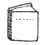

| 荒野（こうや） 12歳 ぼくの小さな黒猫ちゃん | |
| 桜庭一樹 | |
| 文藝春秋 (2012) | |
文春ウェブ文庫
荒野
12歳 ぼくの小さな黒猫ちゃん
桜庭一樹
荒野 12歳 ぼくの小さな黒猫ちゃん
なつかしいもの、愛しかったもの、大切にしていた、なにか。
それらを記憶の底から取りだすとき、荒野は必ず、それの匂いから始める。
荒野には触れなかった、ものたち。
過ぎ去ってしまった季節。
もちろん、いまではもう、荒野は大人の女だ。
でも、薄闇のような記憶の儚いベールに包まれて、あの少女はずっと、いる。
遥かな荒野にたたずんでいる。
小首をかしげこちらをうかがっている。風が吹くと少女の髪が揺れ、その匂いがまた、新たな記憶を呼びおこすのだ。
──十二歳。
大人、以前。
背後でぷしゅうぅぅっ......とドアが閉まった。
ＪＲ横須賀線。
朝の七時四十二分。
北鎌倉駅。
山野内荒野は電車に飛びこむと、ほっと息をついて、しばしたたずんだ。四月五日。今日から荒野は中学生。というか入学式の朝だ。
初めて着た、紺色のセーラー服はごわごわしててへんな感じだった。セーラーのとこだけ白くて、浅葱色の二本線。つるつるしたタイも同じ色だ。
浅葱色は一年生の色。二年生は山吹色で、三年生は臙脂だ。
（もう、小学生じゃないんだぞ）
荒野はそう思って、自覚した分だけぐっと背筋を伸ばした。
接触恐怖症気味の荒野は、電車で通うことになったその、北鎌倉からすこし遠い私立の中学に通学するために、朝のラッシュをさけて早めにうちを出たのだった。入学式、入学式......。ちょっとへんな仕事をしているパパは娘の入学式にどうしても出られない。ママは荒野がまだちいさい頃に天国に行ったから、やっぱりこられない。
（あ。席、空いてる）
荒野は、一駅だけの鎌倉駅に着くまで座ろうと思って、一歩踏みだした。
誰かが後ろから引っ張ってて、動けなかった。
もう一回、トライしてみる。
動けない。引っ張られてる。
振りむこうとすると、セーラーがごわごわと鳴った。むりだ。動けない。荒野はようやく気づいた。
（ドアにっ......）
さっき背後で閉まったドアに、勢いよく乗りこんだせいでふわりとたなびいたセーラー服のセーラーがはさまっているのだ。荒野はもぞもぞと抵抗した。両手を順番に背後に伸ばしてみる。惜しいところで、届かない。
車内には、ごく数人の高校生らしきお兄さん、お姉さんたちや、眠そうなスーツのおじさんが座っていた。わたわたする荒野に気づいて、何人かが小声で笑いだした。
荒野は赤面した。
（は、はずかしい......）
むきになって、というかヤケになって、思い切り、前に踏みだす。すぽんっとドアのあいだからセーラーが抜けてくれるのをイメージした一歩だったが、事態はどんどん、悪化した。
ぶちぶちぶちぶちっ！
ドアのあいだから襟は出てこずに、強く引っ張られたせいでセーラーの前の、タイが結んである辺り、ホックで何カ所か止めてあるそこが、微妙な時間差で全部、外れてしまった。
タイがほどけて、床にふわりと落ちる。
「うっ」
荒野は色気もなにもなく、短く叫んだ。
初めて着た、大人の証のセーラー服が、胸のとこではだけて白いスリップがちょっと見えた。あわてて両手で押さえる。
（どうしようどうしようどうしよう）
荒野の顔が炎のように熱くなったとき......。
空いている車内で、一人だけ立って、文庫本をめくっていた少年が、顔を上げた。
目が、あった。
荒野の惨状に、少年は一瞬、目を丸くした。どうしてそんなことになったの、と聞くように小首をかしげる。それから文庫本にしおりをはさんで、ぱたんと閉じた。
詰め襟の制服のポケットに文庫本を押しこんで、ゆっくり、荒野に近づいてくる。
「......ん」
なにか言った。声が低くて、聞き取れない。
少年は手をのばして、乱暴にぐいっと、荒野のセーラーを引っ張った。ドアのあいだからそれは、少年の言うことなら聞くよ、と言わんばかりにするりと出てきた。自由になった荒野は、顔が真っ赤なまんまで、少年を見た。
背が高い。
色が白い。
眼鏡を、かけてる。
（あ。わたしも、かけてるけど......）
荒野は髪が黒くて、長い。いまは二つにわけて結んでいる。荒野の眼鏡は細い黒縁で、少年の眼鏡はやっぱり細い、銀色の縁をしていた。髪は短い。少年はちょっと迷ってから、かがんで、
「はい」
荒野のタイを拾って、差しだしてきた。
（お礼、言わなきゃ）
荒野は赤くなって、セーラーの取れてしまったホックをはめたりタイを受け取ったりしながら、
「あり、あり、あり......が」
見覚えのある校章が見えた。詰め襟の胸ポケットについている。
浅葱色の二本線がポケットに......。
（この子も、一年生なんだ。今日、入学式......）
下のほうのポケットから、少年がさっき読んでいた文庫本が覗いていた。古本屋さんで買ったのか、なんだかすごく古ぼけている。カバーもなくて、いかにも古本だ。
タイトルが読めた。
『青年は荒野をめざす』五木寛之。
（あ！）
荒野はうれしくなって、そっと本を指差した。
「あの、それ......」
わたしと同じ名前、と言おうとしたのだけれど、少年はそのまま荒野の前を通り過ぎていった。わきめもふらずに。
「かまくらー、かまくらー！」
あ、着いた。
ぷしゅうう、と開いた反対側のドアから、荒野もあわてて、電車を降りた。
ホームに降り立つと、朝の空気がひんやりと、荒野の小さなからだを包みこんだ。
一つ、深呼吸。
（今日から中学生、中学生。ちょっと、大人）
電車のドアが閉まる。今度はどこもはさまれない。
ぷおぉぉぉぉん、と大きな音を立てて、電車が遠ざかっていく。
荒野は歩きだす。
少年の後ろ姿はもう、改札を抜けて外の通りだった。どんどん遠ざかっていく。暗いホームからは、外を歩きだした少年の背中は、朝日に包まれていてなんだかやけに眩しい。
（男の子って、歩くの、はやいんだなぁ......）
荒野はそう思って、自分も、急いで歩きだした。
入学式なのに、誰もこない。
それは山野内荒野としてもすこしばかり遺憾だったけれど、仕方ない。
（パパは締め切りだし、それにパパは......ちょっと、だらしないもん）
荒野の小さな肩を揺さぶって（いい？ あなたの大事なおとうさんは、すけこましなのよ？）と語る、小学四年のときの、若い女の先生のイメージがふとよみがえる。
それはこまる。
張り切って正装した両親と一緒に、ソメイヨシノの咲き誇る私立中学の正門で記念写真を撮る子たちを尻目に、荒野は一人で雄々しく、正門をくぐった。
入学式は、さっさと終わった。セレモニーは短いほうがいい。
それで、それぞれの教室に入ると、さすがに小学校のときから知ってる子はあんまりいなくて、荒野は急に不安になった。きょろきょろしてみる。自分よりずっとセーラー服がさまになる、大人びた女の子と目があった。茶がかったロングヘアを、コテで巻き巻きにしたおしゃれヘアーの子だ。茶色いぱっちりした瞳もどこか外人風で、荒野とは正反対だった。
（なんだか、こわい......）
荒野はよく、日本人形みたいな、と大人に評される。まっすぐの黒髪。切らないから腰まで伸びてる。青白い肌。瞳は真っ黒で細くて、整ってはいるけれど、ちょっと地味な顔立ちだ。眼鏡をかけるとさらに。周囲は、いかにも小説家の娘さんにふさわしい、と言うけれど、荒野自身は、自分の容姿があまり好きではない。
派手な女の子から目をそらして、でも出席番号のせいか席が近かったのでそばに座って、前を見る。
「あ！」
荒野が急に叫んだので、となりの席に座っていた、ショートヘアで日に焼けた、いかにも活発そうな女子がびっくりしたように肩を震わせた。
荒野は、やつをみつけた。
今朝、ＪＲ横須賀線の中で助けてくれた少年だ。渋い古本を読んでいた、あの子。
歩くのが速い、あいつ。
視線に気づいたように、少年がくるっと振りむいた。荒野をみつめて、それから、ああ、と思いだしたようにうなずく。荒野が会釈すると、またうなずいて、目をそらした。
（同じクラスだ......。恥ずかしいなぁ。あんなとこ見られたのに）
荒野は複雑な気持ちになる。
そのとき担任の先生が入ってきた。肉づきがよくて、にこにこしたおじさんだ。みんな席に着く。おじさんは自己紹介して、仲良くいこうなーと言い、それから出席簿を開いた。
ぱらぱらめくりながら、
「まず、クラス委員を決めちゃおうな。まだお互い知らないだろうから、一学期は先生が決めるぞ。いいな？」
いいでーす、とみんなの声。
「男子は、そうだな、神無月悠也」
荒野は飛びあがった。
はい、と挙手したのが、あの少年だったのだ。と、その大人のような落ちついた挙手っぷりをみつめていた、となりの席のショートヘアの子が「さすが、氷の神無月」と言った。
荒野は思わず、振りかえる。
小声で聞く。
「氷？ 知ってる子なの」
その子はうんうんとうなずいて、顔を寄せてきた。お菓子を食べた後みたいな、甘い匂いがした。
「同じ小学校なの。成績もいいし、落ちついてるし。いまだって、先生、顔を見ずに名簿を見ながら言ったじゃない？ きっと入試の成績で選んだんだよ。ぜったい、あいつがトップだって」
「へぇ......」
二人がこそこそ話していると、先生は「で、女子は......」と名簿に顔を近づけた。
みんな、緊張する。
しかし先生はしばし名簿と睨みあった後、データ上に適当な人材がみつからなかったらしく、うーんとうめきながら顔を上げた。
「あれっ」
「女子はみんなおちこぼれ？」
荒野ととなりの女の子は顔を見合わせて、くすくす笑う。
顔を上げた先生は、しばらく視線を彷徨わせていた。それから、荒野の前でぴたっと止まった。
いやな予感がする。
先生はしばらく、荒野の顔を眺めていたが、やがて決まったというようにうなずく。
ますますいやな予感がする。
「女子は、君だ」
「......えーっ？」
荒野は確信した。自分がいま、成績という人を測るナンセンスな数字でもなく、人間性というファジーな価値でもなく、ただ、なんとなーく選ばれたということを。
「えーっ、じゃない。君だ、君。名前は？」
荒野は不満そうに、少しふくれながら、言う。
「山野内、荒野」
「や、や、やまの、うち......あったあった、じゃ、君頼むな」
「はーい......」
急に強い視線を感じた。
そっちを見る。
（......あっ）
あの文庫本の少年、神無月悠也くんが、こっちを見ていた。
心臓がどくん、と跳ねあがる。
荒野はなぜか急に、走って逃げたくなった。
神無月悠也の目線はものすごく冷たくて、射すようで、ついでに責めるようだった。存在自体を全部否定するような、強い目。
氷の神無月。
（あ。な、なに......）
荒野にはわからない。混乱する。
（なんでこっちを睨んでるの？ どうして？）
やがて神無月悠也は、くるりと前に向き直った。
詰め襟の中で、細い肩が少し震えている。荒野はそれを、眉間にしわをよせてちょっと険しい顔で凝視していた。
「い、一緒に、帰ろう！」
全部終わって、今日はかいさーんと言われて立ちあがったとき、後ろから緊張したような声がした。女子の声だ。
振りかえると、最初に教室に入ったときに目があった、あのくるくるおしゃれヘアーの外人さんみたいなかわいい女子が、荒野を睨むように立っていた。
「えっ、あの......」
「わたし、田中江里華。鎌倉三小からきたの」
ぶっきらぼうに自己紹介する。それから頰を赤くして、今度は小さな声で、
「うさまん、食べて帰ろう、にょ」
さっきから用意していたらしき台詞を最後ちょっと嚙みながら言うと、おそるおそる荒野の顔をみつめる。立ちあがると、ちびの荒野よりずっと大きくて、大人の女の人みたいにすらっとしていた。
荒野はきょとんとしていたけれど、気づいてうれしくなって、
「うん！ 行く！」
「わたしも行く」
横からハスキーな声がした。となりの席の、日焼けしたショートヘアの女子だ。三人で顔を見合わせて、えへへ、と笑う。
「わたし、山野内荒野。一小からきたの」
「北鎌倉？」
「そう。今泉台」
鞄を持って歩きだしながら、自己紹介する。ショートヘアの子は、湯川麻美と名乗った。彼女は五小からきたらしい。みんなばらばらだ。
鎌倉駅まで、お互いすこし緊張しながらおしゃべりして歩いて、巻き巻きヘアー江里華おすすめの、うさぎの形のおまんじゅう屋さんに寄った。一個百五十円。真っ白でふかふかのうさまんの中には、たっぷりの栗あんと、大きな栗がまるごと一個、入っていた。
「おいしい！」
「......山野内さんって」
「荒野でいいよ」
「じゃ、荒野って」
ショートヘアの湯川麻美が、ふと、思いだしたというように言った。
「もしかして、あれ？ 山野内正慶の娘？」
「うっ」
あんこが詰まった。
二人に背中を叩かれて、死の淵から生還する。江里華が不思議そうに「だぁれ、それ。武将？」と聞いている。
「いや、武将じゃないって。それに武将の娘なんて現代にいないよ。じゃなくて、小説家の。ほら、恋愛小説書いてる人。前、映画になったりしてた」
「あー、うん......」
荒野は言葉少なに返事する。
うさまんの最後の一切れを口に入れながら、江里華がもごもごと、
「ええー、おとうさん、小説家なの？ すごい！」
「すごく、ないよぅ」
「うちのおとうさんなんて、サラリーマンだよ。日本に百億人ぐらいいるよ」
麻美が楽しそうに笑う。
「江里華、おもしろい。じゃ、小説家は何人いるの？」
「三人ぐらいしかいないよ、きっと」
「じゃ、女子中学生は？」
思いのほか難しい問題だったらしくて、江里華がうーんと考えこんだ。巻髪を一房、人差し指でくるくるさせながら小首をかしげている。
麻美が、
「じゃ、荒野ってすごいお嬢さんなんでしょ」
「そんなこと、ない......」
「でも、今泉台の大きなお屋敷に住んでるって聞いたよ」
「いや、大きいけど、ボロボロだよ......。築百年だし、雨漏りもしてるし」
「お金持ちでしょ」
「小説家は......お金持ちじゃ、ないよ......」
「うちにばあやがいるって」
「ばあや！」
荒野は困って、うめく。
（ばあや......。あれのことかな。あれがばあや......）
北鎌倉の春は、ソメイヨシノと遅咲きの梅の春だ。
駅の改札を抜けると、円覚寺という大きなお寺がある。駅前を鎌倉街道が横切っていて、鎌倉駅ほどではないけれど気持ちのいい春の、こんな午後には、観光客の姿もなかなかに多い。
新しい友達二人とわかれて電車を降りた荒野は、お寺の前の道を歩きだしながら、しらず足早になった。
（小学生のときとは、ちがう）
なんとなく、そう思う。
セーラー服は、重たくて、それに大人の服みたいな湿った布の匂いがした。白い靴下と、ぺたんこの革靴。
だいたい革の靴なんて履くのは初めてで、それだけでなんだかちがう気がする。
「あのぅ......」
知らない人に声をかけられた。荒野は警戒して、硬い顔で振りむく。
小学生の頃からさんざん、知らない人に声をかけられてもついていかないように、学校でもうちでも、習ったのだ。とくに荒野は、女の人に連れていかれそうになることがとても多いから。
そこにいたのは、小さめのリュックを背負った女の人二人組だった。小首をかしげて荒野をみつめている。
「なにか」
「あの、わたしたち、鎌倉山に行きたいんだけど」
「え？ 鎌倉山！」
荒野はあわてて、駅の反対側に回って、道なりにずっと......と説明した。あがってしまって、声がうわずった。
二人組は「ありがとう」と頭を下げて、荒野に手を振り、遠ざかっていった。
きびすを返して、また、うちのある今泉台に向かって歩きだした荒野は、にまにまと笑っていた。
（道、聞かれた！）
スキップするように、坂道を上がっていく。
（観光客の人に、道聞かれるの、初めてだ。いままでは子供に見えてたからだ。そうか......この、セーラー服......）
大人、大人。
口の中で繰りかえしてみる。
濡れた石段の上に、ソメイヨシノの花びらがひらひらと舞い落ちてきた。
「おぅ、どうしたんだ荒野」
今泉台。
坂を上がったところにある、お屋敷町とも言われる古い町並み。
その奥の奥にある、なかば崩れかけたような古い大きな平屋。庭の敷地が広くて、でも庭師を雇っていないので荒れ放題の、なんだか没落貴族風の一軒家。
湿った石でできた門には、消えかけの文字で、山野内、と書かれている。
門をくぐって帰ってきた荒野に、玄関先で、くわえ煙草で競馬新聞に目を通していた女性が声をかけてきた。
煙草をくわえたままなので、もごもごした声だ。
「あ、ばあや」
「なんだって？」
「うちにばあやがいるんだって、って聞かれた。奈々子さんのことだと思うけど」
それを聞いた奈々子さんは、大口を開けて笑った。
笑いながら煙草をもみ消し、カラカラ......と玄関の引き戸を開けて、土間に入る。暗くて、天井の高い廊下を大股で歩きだす奈々子さんについて、荒野もうちに入る。
奈々子さんは、身長が百七十センチちょっと。すごく瘦せていて、髪は短い。二五インチのジーンズを、腰骨に引っかけるようにして穿いている。浅黒い肌をしていて、まだ若いはずだけど、でも年齢不詳。
もう何年も住み込みで働いてくれている家政婦さんだ。荒野のうちにはママがいない。ママの代わりになるものはないけれど、荒野の世話をしてくれる人はこうして、いる。
「夕ご飯、なぁに」
「大根とアラを煮といた。あと、そうだな、サラダつくるよ」
奈々子さんはおおざっぱな人だ。凝ったきれいな料理とかはつくらない。
でもいつも、適当にぶったぎって煮こんだような煮物や、焼いただけみたいなお肉が、驚くほどおいしい。荒野も、荒野の父親（武将みたいな名前の）も、奈々子さんの料理のファンだ。
奈々子さんは、彼女の家事のために使われている小さな和室に入ると、洗濯物をたたみ始めた。パパのシャツ、荒野の下着、パパの寝間着。なにもかもが混沌と積まれていて、それが奈々子さんの手によってより分けられ、たたまれていく。
洗濯物から、いい匂いがする。きっと日なたの匂いだ。
奈々子さんは目を細めて、となりに座った荒野を見た。
「なに」
「もう中学生か。こぇえな」
「こわくないよー」
「時が経つのがだよ。こっちはどんどん年を取る」
そう言いながらも、奈々子さんは妙ににこにこしていた。
「似合ってるぞ」
「ええー」
「あれ、どうした、ここ？」
奈々子さんが、触らないように気をつけながらそっと、荒野のセーラーの後ろの、くしゃっとなってるところを指差した。
「くしゃくしゃになってるぞ。なにやったんだ」
「あ......」
荒野は顔を赤くした。
それから小声で、朝、横須賀線に乗ったときのことを説明した。奈々子さんは途中までは「明日までにアイロンかけといてやるよ」「気をつけろよ、電車なんて一本遅らせればいいんだから」などと合いの手を入れていたが、だんだん静かになった。
それから神妙な顔をして、
「ふぅん、助けられたんだ」
「そう。そしたら同じクラスで」
「荒野、おまえ、惚れたんじゃないのかぁ？」
急にからかい始めたので、荒野は真っ赤になった。「ちがう。ちがう」と首を振りながら、後ずさる。
奈々子さんは荒野の小さなピンクのパンツをたたみながら、
「吊り橋効果だ」
「なぁに、それ」
「ほら、あれだよ。揺れてる吊り橋の上とか、停まったら爆発するバスの中で一緒にいると、危険のどきどきと、恋のどきどきがごっちゃになって惚れちゃうんだ」
「......奈々子さん」
荒野はこわい顔をしてみせて、言った。
「なんだ」
「荒野はね、ばかじゃないよ」
「そ、そうか......。ならいい」
洗濯物の山がようやく片付いた。奈々子さんが若いのに「よっこらしょ」と立ちあがって、たたんだ洗濯物をしまいだす。
荒野もくっついて歩きながら、
「だけど、あの子......」
「ん？」
奈々子さんが、振りかえる。
荒野は男の子のあの、氷みたいだった瞳を思いだす。背筋が急に寒くなる。
「あの子、わたしのこと、嫌いみたいなの」
「あの子って、吊り橋効果の男の子か」
「うん......」
荒野はゆっくりうなずく。
「すっごく、睨んでた。わたしを見て。ううん。わたしの......」
思いだしながら、
「わたしの、名前を、聞いて......」
奈々子さんは不思議そうに首をかしげた。それから洗濯物を一度置いて、
「嫌い？ おいおい......こんなかわいい子をかぁ！ こちょこちょこちょ！」
「きゃはは、やめてよ奈々子さん！」
こちょこちょこちょ、と言いながらも、奈々子さんは荒野に触らなかった。人に直接からだを触られるのが、荒野は極端に苦手だ。直すようにとうるさく言う大人のほうが圧倒的に多いけれど、奈々子さんは単純に「それなら触んない」という人だった。
奈々子さんは事なかれ主義だ、という説もある。でも荒野はそのほうが楽だ。
洗濯物を持った二人が廊下に出たとき、開け放した障子の向こうを、庭の敷石を軽々と踏みながら、瘦せた男の人が歩いてくるのが見えた。
パパだ。
ちょっと有名な、恋愛小説家。
着物を着て、長くのばした髪を後ろで結んでいる。まぁまぁの美形で、だけどいかにもひ弱そうで、いつもユラユラとからだが横揺れしている。
蜻蛉みたいな人よ、と、知らない女の人から昔、声をかけられたことがある。
（知ってる？ あなたのパパは蜻蛉みたいな人なの）
荒野は小学生のときから、危険な瞳をした女の人に、学校帰りに声をかけられたりすると、走って逃げることにしていた。
パパに関わる女の人たちが、どうして娘の荒野に興味を持つのか、よくわからない。
山野内正慶、つまりパパは、庭の奥にある、一間だけの居心地のいい離れを仕事場に使っている。昼間は離れに籠もって、こうして夕方、ふらっと外に出てくる。
今日もパパは、湿っていて少し甘い、女の人の匂いをぷんぷんさせながら、母屋にもどってきた。そして眩しそうに荒野と、奈々子さんを見た。まず荒野に、
「素敵だな。そうして制服の中に閉じこめると、記号的になって、かわいいね」
とわけのわからないことを言い、うなずいた。
それから奈々子さんを見上げて、甘えるように、
「奈々子さん、ぼく、お腹が空きました」
言われた奈々子さんは苦虫を嚙みつぶしたような顔をして、ちっと舌打ちした。これじゃ、どっちが雇い人かわからない。
彼らの視線の先を、ほっそりとした若い女が足早に通り過ぎていった。
庭石に響くハイヒールの音。いかにも現代風なパンツスーツに、書類鞄。昭和のままのような庭では、その人はすごく浮いている。
女は一度足を止めると、ほんのりと頰を高揚させ、会釈した。
「では、先生。ゲラが上がりましたら、のちほど、また」
「ええ」
二人は密やかな笑みを交わす。
それを見送ると、奈々子さんは荒野に聞こえないように小声で、
「そりゃ、センセ。いい年して真っ昼間から乳繰りあってりゃ、腹も減るよ」
「ちょっと奈々子さん、お下品な」
パパが小声で抗議する。
荒野にはもちろんしっかり聞こえている。
「あの方は編集さんですよ。わたしの担当なんです、そんなことはありませんよ」
「あほか、おめーは。恋愛小説家やってんだろ。ばかを言うな」
奈々子さんが廊下を歩きだしながら、切って捨てる。
「だって、なにやってたって、女は女なんだぞ」
洗濯物をぎゅうっと抱えて、こわい顔をして、奈々子さんはそううそぶいた。
中学生活は、小学校とはぜんぜんちがった。
だけど始まって一週間経つと、荒野はだいぶ慣れてきた。ごわごわの制服に、革の靴。部活の勧誘。移動教室。クラス委員はなにかというと、
「神無月と、山野内。職員室にきて」
と、プリントの束を持たされたり、先生の替わりに出席を取らされたりする。
要するに、先生のお小姓なのだ。眼鏡のコンビ、と男子のグループにからかわれるたび、荒野はぐっと睨んだ。神無月くんは知らんぷりしていた。きっと荒野より大人なのだ。
でも神無月くんは囃し立てる男子だけじゃなく、なぜか、荒野のことも無視していた。
二人でプリントを持っていけ、と職員室で言われても、量が少ないと、自分で全部持ってしまう。荒野が後ろから「わたしも、持つよ」と声をかけても、返事をしない。
吊り橋効果の後には、不安と、怒りみたいなものがやってきた。荒野はわけがわからなかった。
神無月くんがなんでもやってしまうから、荒野はクラス委員と言っても、あまりすることがない。
「荒野って、部活やってる？」
ある日、休み時間に女子トイレに行ったら、鏡の前で、巻き巻きヘアーをコテでさらに巻き巻きにしながら、江里華が言った。
「ぶ、部活。やってない」
「じゃあさ、アルバイトしない？ 日曜日だけ。うちの伯母さんが捜してるの」
「アルバイト！」
思いもかけなかった言葉なので、荒野は思わず、繰りかえした。陸上部に入部したばかりの湯川麻美は、あくびしながら手を洗って、濡れた手でショートヘアを適当に整えながら、
「ああ、こないだ言ってたやつ？」
「そ。荒野ならぴったりだと思って。なんといっても、和風だし」
江里華の言うアルバイトとは、週末のお昼から夕方まで、彼女の伯母さんの着付けでアンティーク着物を着て、髪もアップにして、大正時代の女学生さん風の格好で鎌倉の町をそぞろ歩くというものだった。
観光客のために、鎌倉をそれっぽく見せる演出、なのだそうだ。
「一カ所だけなら、お店に入ってなにか食べてもいいんだって。全店共通のただ券がもらえるの。日給は千円」
荒野は、黒い髪をといて、またゴムでていねいに結び直しながら、考えこんだ。
「やりたいなぁ......」
「でしょ。わたしもやるから、一緒に行こうよ」
江里華が身を乗りだす。荒野はうんとうなずいて、パパに聞いてみるね、と返事をした。
「アルバイト？」
今日もまた、女の人の匂いをぷんぷんさせながら、パパが言った。
その日の夕食の席だ。メニューは塩をふって焼いただけの魚と、ぶったぎった具だくさんの汁。シソと胡麻を適当に混ぜたご飯。美味い。
「そう」
荒野は、日給が、ただ券が、と具体的な説明を始めた。するとパパは塗りのお箸を優雅な動きで一振りして、荒野を黙らせた。
また、きざなことを言うのだな、と荒野は覚悟した。
当たった。
「荒野、そこにときめきはあるのかい？」
「ある！」
アンティークの着物、素敵なシニョンにしてもらえる髪、つるつるした陶器の簪、食べるのがもったいないぐらい淡くて美しい和菓子と、抹茶のセット......。
「それなら許すよ、ぼくの小さな黒猫ちゃん。......奈々子さん、おかわり」
荒野は、ふぅ、とため息をついた。
お茶碗を差しだされた奈々子さんが「うーん、ときめきねぇ......」とうめいている。庭から、かぽーんと鹿威しの音がする。なんだかこのうちはこの世じゃないみたいだ、と、浮き世離れした父親をみつめながら荒野は思う。
クラス委員の仕事は、相変わらず、神無月くんが知らんぷりし続けているのでどうもやりにくかった。
入学して一カ月ぐらい経って、だいぶクラスの子たちともうち解けて、学校が楽しくなってきたころ。
お昼休みの最後の十分を、女子トイレの鏡の前でおしゃべりして過ごしていた。すると、セーラー服のお腹辺りになにかを隠し持ちながらやってきたクラスメートの女子が、足早に個室に入っていき、忙しなくドアを閉めて......。
なにやら、吠えた。
「どうしたの？」
みんなで振りかえって、聞く。
すごすごと個室から出てきたその子は、しょんぼりして、
「ナプキン落とした......」
「えーっ」
みんな一斉に、驚きの声を上げる。
教室で鞄から生理用ナプキンを一個出して、お腹に隠してトイレに持ってきたんだけど、途中でころんころんと落としてしまったらしい。空っぽの手のひらをみつめて、その子は呆然と立ちつくしている。
トイレが静寂に包まれる。
奥の四角い窓から、春の風がふわり、とたなびく。
みんなで顔を見合わせた。
それから、ひょい、ひょいと、おそるおそるトイレから顔を出して、廊下をみつめた。
と、少年たちの叫び声がした。
いや、雄叫びだ。
そこには、予想もしなかった地獄絵図が展開されていた。荒野は目を覆いたくなった。
いつも廊下でだるそうにだべっているはずの、男子。うちのクラスのと、となりのクラスのが一緒になってだらだらしている。そのはずの男子がいまだけは立ちあがり、なぜか奇声を上げながら......。
ナプキンでサッカーをしていた。
女子が落とした白い四角いのが、ふわふわと宙に浮いては、落ちてくる。
それをまた男子が、蹴りあげる。
どの顔も、なぜか真っ赤に染まって、おさるみたいだった。口角から泡を飛ばしてるやつまでいる。みんながおかしくなっている。その様子を、ナプキンを落とした子が一目見て、
「！」
うわーん、と泣き始めた。
女子に激しい動揺が広がった。
荒野はむっとして、おさる軍団と化した未知の集団、男子を睨んでいた。これまでの人生で初めて荒野は、男を、心底憎い、と思った。静かに怒っていると、女子の一人が荒野をつついた。
「なぁに」
「取りかえしてあげてよ、山野内さん。この子、泣いちゃったよ」
「うん。......えーっ、わたしが？」
「だって、山野内さん......」
その女子は顔を輝かせて、言った。
「クラス委員だし」
「......あっ」
振りむくと、女子全員が、いつもおとなしい荒野のことを、なぜか期待を込めた瞳で凝視していた。クラス委員だからきっとなんとかしてくれる、この未知の危機からわたしたちを救ってくれる、というよくわからない期待に満ちていた。
荒野は一瞬戸惑ったけれど、つぎの瞬間に、うん、とうなずいた。
一歩、女子トイレから踏みだした。
この一歩はじつに大きい、という気が、なんとなくした。この廊下はまだ見ぬ荒野（文字通り）だ。
荒野は男子のところまで歩いていくと、すうっと息を吸った。
そして、勇気を出して一喝した。
「こらぁ、男子！」
廊下は静まり返った。
真っ赤な顔で飛び跳ねていた男子たちが、一斉に動きを止めた。
ナプキンが落下してきて、みんなの真ん中にぽとっと落ちた。
男子はみんな、夢から醒めたような顔をしてきょとんと荒野をみつめている。荒野の顔も真っ赤だった。やがて男子ははずかしそうに頭をかき始め、一人が照れ隠しのように、
「山野内、こえー......」
その声に、荒野はなぜかけっこう傷ついた。
（こわくないぞ。だって、クラス、委員、だし......）
男子は何処へともなく解散していき、一人がナプキンを拾うと、ほらよっと荒野に投げてきた。受け取りやすいようにふんわり優しく投げてくれたので、荒野はあわてなくてもキャッチできた。
ふぅ、と一息ついた。
ふと視線を感じた。
振りむくと、男子トイレから出てきた神無月くんが、不思議そうに荒野をみつめていた。足跡がいっぱいついたナプキンを持って仁王立ちしている荒野を、無表情に見ている。
荒野は途端に、青くなった。神無月くんの顔と手の中のナプキンを見比べ、うっとうめく。
「あの、これ、わた、わたしのじゃ、なく、て......」
神無月くんは興味なさそうに、ああ、そう、とだけつぶやいた。
教室にもどった荒野は、恥辱と傷ついたプライドのために、放心し続けていた。
幸い、午後の授業は体育でも移動教室でもなく、先生に当てられることもなかったので、そのまま無事に放課後になった。
まだ呆然としている荒野に、となりの席の麻美が、
「いい加減、立ち直りなよ」
「尼になろうかと思う」
「荒野ぁ......」
江里華が近づいてきて、
「いいじゃないの、クラス委員だからって頼りにされて。それに、ちゃんと男子に勝ったんでしょ」
「男子に勝って、でも、己に負けたような気がする」
ちらっと、離れた席にいる神無月くんを見る。
あの超絶冷静な態度。
すこしばかにしたような、ああ、そう、という声。
腹が立つし、はずかしい。
荒野は、ぐちを聞いてくれる優しい友達が二人もそばにいるので、調子に乗って続けた。
「だいたいわたし、クラス委員に選ばれたのって、この眼鏡のせいだと思うの」
「眼鏡ぇ？」
「男子は成績で選んだけど、女子は、先生がきょろきょろして、適当に指名しただけでしょ。あれはぜったい、眼鏡だからこの子っていう、安直にして愚かしい選択だったと思うわけ......」
「あら、ま」
麻美が考えこんでいると、江里華が明るく、
「じゃ、コンタクトにしてみれば」
荒野はびっくりして、顔を上げた。
「コンタクト？」
「そうだ。おうちが眼鏡屋さんの子、いるよ。ええと、誰だっけ」
「神無月でしょ」
麻美が言った。びっくりしているあいだに、二人がきれいな輪唱で、
「かんなづきー」
「かんなづきくーん」
やつの名前を呼んだ。
眉間にしわを寄せて、神無月くんが振りかえる。
「眼鏡屋だよね」
「......いかにも」
「この子にコンタクト！ 授けてたもれ！」
江里華が荒野を指差して、言う。神無月くんは驚いたように「あっ」とつぶやいた。
それから警戒するように、
「山野内に？」
「そう」
「山野内荒野に？」
「......へぇ、神無月のくせに、女子の下の名前覚えてるんだ。めずらしい」
麻美がからかうと、神無月くんは驚くぐらい、氷のよう、なはずの顔を真っ赤にした。
「そういう理由じゃない！」
「動揺してるー」
「やらしー」
二人がここぞとばかりに輪唱すると、神無月くんは、
「コンタクトだな！ うちにくるんだな！ いいとも。くるならこい！」
と、おかしな様子で繰りかえした。これるもんならこい、こっちは平気だぞ、と、なんだか言っていることもおかしい。
荒野はともかく、小さな声で、
「よ、よろしく」
と言った......。
神無月くんの眼鏡屋は、学校のある鎌倉駅からＪＲ横須賀線に乗って、荒野のうちがある北鎌倉を通り過ぎて一駅行ったところにある、大船駅にあった。
駅前は、観光地ではなく普通に栄えている駅という感じで、デパートや喫茶店やハンバーガーショップがたくさんあった。
アーケード街の薄暗いタイルの道路を、神無月くんは黙って歩いていく。
夕方のアーケード街は、たくさんの人であふれていた。荒野は、それぞれの店先に積みあげられたアルミ鍋や、スリッパや、春物のシャツに目を奪われて、神無月くんを見失いそうだった。
「神無月、くん」
小声で呼んでみるが、眼鏡の少年は振りかえらない。
いちばん最初に会ったあの朝、見送ったのと同じ細い背中が、人混みの中を遠ざかっていく。
あの朝の、あまりにも眩しかった（朝日のせいだけど！）彼の後ろ姿が脳裏をよぎる。
（おいていかれたら、いけない）
荒野はきょろきょろするのをやめて、走って、少年に追いついた。セーラー服の重いプリーツスカートが、ふわり、と舞う。タイルを鳴らす自分の足音は、ピンクのスニーカーを履いていた小学生のときとはちがう、革靴特有の、硬質な音だった。
ようやっと追いついた荒野は、ふぅ、と安心した。
それから、硬い顔つきのまま、なんにもしゃべらない眼鏡の神無月くんに、
「いい、アーケード街だね」
と、答えは、ふるっていた。
「──遠くに行きたいんだ」
低い声だった。こんなに細いのに、神無月くんはもう声変わりしていて、大人みたいな声だ、と荒野は思う。
「遠く？」
「うん」
神無月くんはすこしだけ首を動かして、なぜか嫌っている（らしい）、なのにちゃんとフルネームで覚えている（どうやらめずらしいことらしい）山野内荒野の顔を、見下ろした。
どきん、とする。
女の子の友達と一緒に歩くときとは、なにかちがう。あっ、目線だ、と荒野は気づいた。つめたく見下ろされていて、見上げるとなんだか眩しくて、荒野はどきどきした。
「荒野に」
「へっ」
「ああ、君のことじゃないよ。じゃなくて、荒野に行きたいんだ」
神無月くんの詰め襟のポケットに、最初に会ったときと同じ本が入っていた。青年が荒野をめざす本だ。
「遠くに行きたいってこと？」
「まぁ、そう」
神無月くんはうなずいた。
しばらく沈黙が続いた。黙々と歩く少年に、荒野は戸惑いながらも、聞いてみた。
「それって、具体的には、どこなの」
「......具体的？」
神無月くんは急に、せせら笑った。
アーケード街の奥の奥、だんだん人気がなくなってきたタイルの道。彼の小さな声が、よく響いた。
「具体的、だって？ 君、もう、女みたいなことを言うんだなぁ」
なんとなくばかにされてる気がして、荒野は黙った。
（だって、女だもん......）
と思う。
二人のあいだに沈黙が落ちる。二足の新しい革靴が立てる硬質な足音が、微妙な輪唱を始める。
「なにが、待ってるか......」
「ん？」
「なにが待ってるかわからないからこそ、そこが荒野なんだ」
「そ、そうなんだ」
「ぼくが言ったんじゃない。この本にそう書いてあるんだ」
神無月くんはポケットを指差した。
「おもしろい？」
「山野内には難しいと思う」
「......」
「小説は好きだよ、ぼく」
なぜか、は、のところにアクセントをつけて、神無月くんは言った。
（なんだかよくわからんけど......神無月くんは、じつはちょっと、いやなやつかもしれない）
荒野は思った。
やがて二人は、アーケード街のいちばん奥にある、かなりさびれた眼鏡屋さんに着いた。小さな店舗で、黄ばんだガラス張りのウインドウに、それでも、最近はやりのメタルフレームの眼鏡がたくさん飾ってあった。
荒野が入ろうとすると、神無月くんはなぜか、あわてたように「あっ」と短く叫んだ。それから荒野を止めようとするように手をのばし、とつぜん......。
「おいっ......」
ぎゅむ、と、荒野の黒い長い髪を束にして、つかんだ。
荒野は吠えた。
「ぎゃーっ！」
「うわぁ！」
荒野は顔を強ばらせて、振りむいた。
神無月くんは仰天して、手を放し、道路の反対側の壁まで後ずさっていた。二人の咆哮がアーケード街全体に響き渡り、あちこちの店舗から、ひまそうなおばあさんや、杖をついたおじいさんや、子供がゆっくりと時間差をつけて出てきては、二人を不思議そうに眺めた。
神無月くんは泣きそうになっていた。
「あのっ、ごめん。わたしね......」
荒野はあわてて言った。
首の辺りがぞわぞわする。
「触られるの、その、だめなんだ」
「触？」
神無月くんは立ち直って、そろりそろりとそばにもどってきた。
「うん」
荒野は赤くなる。
「だから体育も、休むことがあって。服の上からなら、そんなにぎゃあぎゃあ言わないんだけど......」
「それって、いつから？」
荒野は恥じらう。
うつむいて、
「小、四」
担任の女の先生に、パパのことを言われたときからだ。でもそれは黙っておいた。誰にも話したことがないのだ。
神無月くんは少しずつ動揺の気配を消して、
「親父に、なんかされたのか」
急に言った。
「ええっ。ちがうよ。どうして？」
「だって、恋愛小説家だろう」
「だったらどうして？」
「......小説はハングリー・アートだから」
また難しいことを言い始めた。荒野は眉間にしわを寄せて、
「さっきから思ってたけど、神無月くん」
「なんだ」
「神無月くんの言うことは、よくわからん」
「うっ」
「神無月くんは、黙ってたほうが、もてると思う」
い、言ってやった！
荒野は心の中でガッツポーズをした。横目でちらっと見ると、少年は荒野が後悔するほど、ショックを受けたような表情をしていた。荒野は心配になって、
「神無月くんは、もてたいの？」
「ちがう！」
二人はしばらくみつめあっていた。
少年のほうが先に、目をそらした。
「山野内、おまえはけっこう、手強いな」
「そう？」
「いままで、なめてた。おまえ、ちょっと見、ばかっぽいから」
「荒野はばかじゃない！」
「さすが、ハングリー・アートの子供」
感心したような、揶揄するような、へんな言い方で神無月くんはつぶやいた。荒野は、やっぱりいやなやつだ、と思いながらも黙っていた。
カラカラ、と、眼鏡屋の引き戸を開けて、少年が先に店に入っていく。
振りむいて、荒野を見る。
「......なに？」
「ここまで、いじめながら連れてきたけど」
「いじめてたんだ！ 神無月くん！」
「四月五日からずっと。わかってただろう？」
「わからないよ！」
「......ほんとうに入るのか」
最後の一言だけ、妙に陰があった。
怒っているような、心配しているような、おかしな、顔。
「えっ。入る、よ？」
「じゃ、入れよ」
ぶっきらぼうな返事が返ってきた。
「......おまえは手強いからな」
「だから、なんのこと？」
今度は答えがなかった。
眼鏡屋さんの中には、たくさんの眼鏡と、コンタクトレンズ関連商品と、それから日本人形のような完成美の女の人がいた。
荒野も日本人形と言われるけど、それは子供の、菊人形とかの意味だ。
その女の人ははんなりとした、大人の美女だった。
薄い皮膚。長い黒髪。濡れた瞳。
地味なカーディガンとロングスカート姿で、ぼうっと座っている。荒野たちに気づくと、薄く笑った。瞳の周りにちりめん状の繊細なしわがいくつも浮かんだので、荒野は、その人が美しいけれど若くはないことに気づく。
近づくと、いい匂いがした。日陰のやわらかい土のような。密やかな匂い。
「......いい匂いがする」
荒野がつぶやくと、なぜか神無月くんは顔をしかめた。
美しいけれど若くない女の人は、神無月悠也のおかあさんだった。父親──つまり神無月くんの祖父──が経営している眼鏡屋さんで、夕方まで働いているらしい。
神無月くんが、クラスメート、と荒野を紹介した。
笑顔でなにか言いかけるおかあさんに、
「山野内荒野！」
一瞬、時が止まった。
おかあさんは氷のような無表情になった。それから、意を決したように笑顔にもどった。
「こんにちは」
また瞳の周りにしわが浮かぶ。荒野はそれにみとれながら、
「こんにちは」
さっき神無月くんと喧嘩していたときより低い声で、緊張しながら頭を下げた。
「眼鏡がいやで、コンタクトにしたいんだってさ。理由は、なんだっけ？」
おかあさんが小首をかしげたので、荒野はつっかえながら、眼鏡のせいだけでクラス委員に選ばれたこと、神無月くんは正当な理由で選ばれたこと、それはどうかと思うこと、などを説明した。
おかあさんは瞳を見開いて、静かに聞いていた。包みこむようなふかふかした空気が、眼鏡屋さんの中に充満していた。荒野はそれに気づいて、
（これはいったい、なんだろう）
天井を見上げたり、床を見下ろしたりしながら考えた。
おかあさんは小首をかしげたまま、じっと荒野の顔をみつめていた。それからささやき声で、
「眼鏡、取ってみて」
「へっ......」
荒野はゆっくり、眼鏡を取った。
黒縁の小さい眼鏡を外すと、ぼやけてなにも見えなくなる。
「あの......」
「かけていいわ」
荒野はほっとして、眼鏡をかけた。
いつもかけている眼鏡がないと、からだの一部をどこかに落っことしちゃったような気がして、落ちつかなかった。その気持ちを見越したように、おかあさんは薄く笑って、
「あなた、眼鏡かけてる顔もなかなかかわいいのに」
「えーっ」
「でも、一応、コンタクトレンズのパンフレット。ソフトとハードとか、毎日代えるのとそうじゃないのとか。酸素透過性とか。値段もいろいろだし、おうちの......おうちの人と、相談してみなさい」
「はーい......」
眼鏡屋さんを出て、パンフレットを眺めながら歩く。
前からきたおじさんとぶつかりそうになったので、あわててパンフレットを鞄にしまう。
（うちに帰ってから、よく読もう......）
駅まで送ってくれている、割にはすたすた先に行ってしまう神無月くんをあわてて、追う。
「あのさ」
「......」
「おかあさん、きれいだね。いいなぁ......。うち、おかあさんいないんだ。写真は見たことあるけど。荒野に似てるって親戚の人には言われるけど、よくわかんないし」
「なんだ。おまえ、ほんとに知らないのか」
あきれたような声がした。
顔を上げると、神無月くんがじっと荒野を見下ろしていた。もう怒っていなかった。
「なにを？」
「......なんでもねぇよ」
そのまま神無月くんは黙ってしまった。
アーケード街にも日が落ちて、人通りは少なくなっていた。通り過ぎる人たちはみな足早で、どこかにむかって急いでいる。
急がないと、なにかに間に合わない──。そんな空気の中を、神無月くんは荒野に合わせて、ゆっくりと歩き始めた。
心に留めてくれている、という感じがした。くるときよりずっと。
密やかな、優しい気配がした。でもそれは、この男の子にはなんだか似合わなかった。荒野はなぜか落ちつかなくなる。
「いじめて、ごめん」
急に神無月くんが、言った。
大人っぽい言い方だった。荒野はどきっとして、
「いいよ」
そうつぶやいた。
彼のとなりを歩き続けた。
群青色の夜空に、月が滲むように浮かんでいる。
夜風はまだすこし冷たかった。
季節はゆるりとさりげなく過ぎていく。
五月になった。
あれっきり、山野内荒野と神無月悠也は教室でも、それ以外の場所でも、しゃべっていなかった。もちろんクラス委員の仕事のときは、すこしは会話をするけれど。
でも、それだけだった。
荒野はうちでときどき、コンタクトレンズのパンフレットの束を取りだしては、眺めていた。眼鏡も、好きなのだ。それはこの世と、荒野の小さな世界を結ぶドアで、中学生になったからといって急に眼鏡をやめて、ドアを開け放してしまうのはこわい気がしていた。
レンズ越しに触れる、常世。
そんな感じが気に入っていたのだ。だから眼鏡がだいじだった。
そして荒野は、神無月くんもそんなふうにしてこの世と対峙しているような気がするのだった。
思ったよりいやなやつだったけれども。でも、なんとなく。
くるくる巻き巻きの江里華に誘われて、五月の長い連休を荒野は、アンティーク着物のアルバイトに使うことにした。
麻美は陸上部の特訓で、忙しいそうだ。
朝早く、起きだした荒野は、顔を洗って、黒髪をといた。デニムのオーバーオールとフード付きのジャンパーに着替える。台所に飛びこむと、奈々子さんはいなかった。廊下に出ると、庭先で石灯籠におでこをくっつけて、煙草を吸っていた。
奈々子さんは朝に弱い。
いまも石灯籠がなければずるりと崩れ落ちてしまいそうな様子で、白目をむいて、煙草をくわえている。
「おはよう！」
「......おぅ、荒野。なんだよ、楽しそうだな」
荒野がお気に入りのオーバーオールを着ていることに気づくと、奈々子さんはあわてて煙草をもみ消して、近づいてきた。
「張り切ってるな」
「着物！ 簪！ 帯留め！」
「女の子だなぁ」
奈々子さんは、女の人にしては大きな手のひらで、よしよし、と荒野を撫でる真似をした。それから「よっこらせー！」と声を出して縁側に上がり、台所へ入っていった。
イギリスパンを適当に、ちょっと斜めだけど気にせずに二枚、切る。
それをオーブントースターに放りこんで、焼く。
乱暴に卵を割って、塩を適当に入れてといて、フライパンで焼く。焼きあがったパンにマーガリンを塗って、じゃぶじゃぶ洗って水を切ったサラダ菜と薄焼き卵、ケチャップをかけて、はさんで、どんっとお皿に載せる。
マグカップにどばどばとミルクをそそいで、
「そら、卵サンド」
荒野は食べ始めた。
おいしくておいしくて、ボリュームたっぷりの朝ご飯をぺろりと食べた。奈々子さんはそれを、目を細めてみつめていた。荒野は視線に気づいて、
「......なぁに」
「最近、よく食うな」
「えっ、太った？」
「いや。成長期ってやつだろ。おまえ、もともと食は細いのになぁ」
奈々子さんはうれしそうに笑った。
折れそうに細い腰を揺らして、もう一度、
「あぁ、成長期かぁ」
奈々子さんはつぶやく。
連休前に、教室で渡されたかなり適当な地図だけを頼りに、一時間後、荒野はなんとかして田中江里華のうちに辿り着いた。
鎌倉駅からちょっと奥まったところにある、こぢんまりした一軒家。
建て売りの現代的な造りで、荒野のうちとはだいぶ趣がちがう。洋風の二階建てだ。
玄関に入ると、びっくりするぐらいたくさんの靴が脱ぎ散らかされていた。
大人のも、子供のもある。
たくさんの人の喧騒が漏れてきた。それも荒野には、なじみのないことだ。
「おかあちゃん！」
江里華の怒鳴り声がした。
「わたしのプッチンプリンがないよ！」
続けて、プリンぐらいで騒ぐんじゃない、と叱責する大人の声がした。江里華は怒り狂って、世界の終わりのようにプリン、プリンと騒いでいる。
「あのぅ」
荒野は小声で呼んでみた。
それから、意を決して、
「ごめん、ください！」
「プリーン............あっ、荒野だ！」
どたどたと足音がして、江里華が走りでてきた。
わぁ、と荒野は驚いた。
いつもは制服姿の、その新しい友達は、休日はさらに大人っぽかった。セーラー服という記号が外れると、江里華はまるで大人の女の人みたいだった。
巻き巻きの茶色い髪。
薄くお化粧している。
ストライプのシャツはボタンを二つも外していて、胸元の白さが眩しい。短いスカートから形のいい足がのびている。
早めに咲く花だ。
「......弟に、プリン食べられちゃってさ」
そんな容姿なのに、子供っぽい表情を浮かべて近づいてくる。ずいぶんとギャップがある。荒野は笑顔になって、
「おじゃまします」
「上がって上がって。いま、伯母さんもくるから。二人で着付けしてでかけよう！」
江里華のうちは、大家族のようだった。たくさんの人間の生活の匂いが充満していた。
祖父母もいて、弟や妹もいる。おかあさんという人は江里華を小山のように大きくした感じの人ですごく忙しそうだった。
大量の洗濯物や、食器。駆け回る弟たち。
それをひょいひょいよけながら江里華は、
「すごいでしょ」
「うん......」
このうちで育ったら、接触恐怖症になるような、人格の余白はないような気がした。江里華の伯母さんという人は、江里華のママが瘦せて、お化粧したらこんな感じだろうか、という人で、荒野を一目見るとにやりとした。
「ねっ」
江里華が得意げに言う。
「日本人形みたいな子でしょ」
「本当ね」
「おとうさんは小説家なんだよ」
まるで自分のことのように得意げに繰りかえすので、荒野は恥ずかしくなってきた。
まず江里華が、慣れた調子でぱっぱっとシャツとスカートを脱いで、長襦袢を手に取った。荒野は、服を脱いだ江里華がもう大人みたいなレースのブラジャーをつけているのに気づいて、思わず小さく、あっと叫んだ。
ほんのりと、わずかな蒼い脹らみが、大人にしか許されないはずの黒っぽいレースに包まれていた。
荒野が気圧されているうちに、江里華はさっさと長襦袢を羽織って、腰できゅっと締めて、それから振りかえった。
伯母さんが、悲鳴を上げるまもなく荒野のジャンパーとオーバーオールを脱がせて、長襦袢を着せていく。
子供っぽい木綿のタンクトップを着ているだけの荒野の上半身を、伯母さんは「ふむ......」とうなりながら見た。なにか言いたそうだった。荒野は自分のからだを見下ろした。
これまで考えたことがなかったけれど、黒いレースに包まれた江里華のよりずいぶんと大きな、二つの胸がすけていた。
そういえばここしばらく、荒野はお腹が空いて、たくさんたくさんご飯を食べていたのだった。小学生のころは食が細くて、すぐにご飯を残していたのに。
成長期かぁ、というあの声が蘇った。
からだの変化は、本人の了承なしにとつぜん始まって、終了するまで待ったなしに続くのだ......。
視線を感じて顔を上げると、江里華がじっと、荒野の胸をみつめていた。
いつもの笑顔とはちがった。
まるで......怒ってるような顔。
頰骨の辺りが少しずつ赤くなっていく。
荒野はその表情に驚いて、みつめかえした。どこかで見た表情だ、と思って、荒野はそれが、こないだ一緒に歩いた神無月悠也の顔に浮かんでいたものに近い、と気づく。
怒りか。戸惑いか。
それとも、荒野のまだ知らない、なにかか。
江里華は傷ついたようにふいに、目を伏せた。
荒野は、ぼかしを利かせた赤紫地に、梅の木がぷくり、ぷくりと咲くアンティーク着物を着せてもらった。帯は黒で、おとなしめの文庫結びだ。
髪は左右に高さのちがうシニョンを一つずつつくるラジオ巻きで、ビーズの簪を二つ、さしてもらった。お化粧はしないけど、ほっぺたに頰紅を一振り、してもらう。
江里華は鮮やかな青地に白い雲が浮かぶ着物。クリーム色の帯。茶髪はポニーテールにして、同じ青のリボンを飾る。
着物から、嗅ぎなれない布の不思議な匂いが立ち上ってくる。過去からの匂い。荒野はぽうっとする。
江里華と手をつないで、田中家の玄関を飛びだした。大通りに向かって歩いていけば、もう、鎌倉のレトロチックな街並みだ。
二人が歩いていくと、観光客のおねえさんたちがつぎつぎ、振りかえった。
写真を頼まれて、一緒に写ったりする。
ときどき、同じアルバイトらしいアンティーク着物の女の子たち、二人組や三人組とすれちがう。みんなうれしそうにそぞろ歩いている。
「いつもの鎌倉だけど、なんだかちがうね」
「そうだね」
江里華の声に、荒野も賛同する。
結局その日は、二人で相談して、ただ券で天むす屋さんに入った。一口サイズのおにぎりに、小さな海老の天ぷらが入っている。ほうじ茶とよもぎのおもちもセットでついていた。
「おいしいね」
「うん！」
二人でくすくす笑いあう。
「ねぇ、荒野」
食べ終わったころ、江里華が急に言った。
「なぁに」
「荒野って、ぼいん」
あんまり聞かない言い回しだけど、意味はわかる。荒野は真っ赤になり、あわててうつむいた。
「意外」
「そう......？」
「うん。顔とからだがなんだかちがう」
「む......」
荒野は黙りこむ。そして確かに、江里華のほうがそれっぽいなぁと思う。
そう思うとなんだかかなしい。胸がきゅう、と鳴る。
連休はそうして、毎日ちがう着物を着て、いろんなお店を回った。
日によっては同じクラスのべつの女の子も混じっていて、人数が増えたりする。みんなで遊び回って楽しかったけれど、連休の最後の日になると、さすがに疲れてきた。
駅に近い、一軒家を改造したという和風の喫茶室で、女の子四人でさくらんぼのシフォンケーキを食べる。同じクラスだけどいままであまり話したことのなかった女の子が、「じつは」と言い始めた。
野球部の三年生に、好きな人がいる、という。今日はその話がしたくてたまらなかったらしい。ふわふわのシフォンケーキを陶製のフォークでいじくりながら、女の子は「好きなんだー。ほんとうに好きなんだー」と繰りかえした。
荒野の小さな耳を、その言葉が右から左へ、清々しいほどひっかかりなく流れすぎていく。
どうやら、女の子たちは江里華のことを、大人っぽいから恋愛の達人だ、と思っているようだった。荒野は、プッチンプリンのことで大騒ぎしていた江里華を思いだして、そんなこともないような気がして、首をかしげる。
ぼんやりしている荒野に、一人が、
「山野内さんは好きな男子、いないの」
「えっと......」
荒野はフォークを置いた。
気づくと、女子三人が荒野をじっとみつめている。
荒野は困って、小声で、
「好きってどういうことか、ちょっと、まだ、よくわからなくて......」
とつぜん、江里華が言った。
「それはきっと、性欲をともなう強い好意、のことだと思う」
荒野はびっくりして、江里華を見た。背も高くすらっとしていて、一人だけどこか大人びた江里華は、あくまでも真剣な顔をして一同を見回していた。
あとの二人の女子は、急に顔が赤くなって、さきほどまでの饒舌さが噓のようにだまりこくってしまった。そして恥ずかしそうに顔を見合わせる。
小さな声で「やっぱり田中さんって、ちょっと変わってる......」とささやきあっている。
一人が荒野を見て、声を上げた。
「山野内さん！」
「......ん」
「鼻血！」
「ええっ」
鼻の下を触ってみる。
つー、と血が垂れていた。江里華が「きゃあっ」と叫んでおしぼりで荒野の鼻を押さえた。大騒ぎしているうちにその会話はなんとなく、なかったことであるかのように遠くに追いやられていった。
帰り道。
着物から着替えて、もとのオーバーオールとスニーカーにもどり、だけどせっかくだからヘアスタイルはラジオ巻きのままで歩いていたとき、荒野はとつぜん転んだ。
鼻血がまた出ないか心配で、上を向いて歩いていたせいもあると思う。
だけど最近、転びやすくなっているのも確かなのだ。理由はよくわからない。
横須賀線を降りて、北鎌倉の駅から歩きだしたところだった。荒野は「う！」とうめいて、しゃがみこんだ。
ちょっと足首をひねった気がする。しゃがみこんだ女子中学生をよけて、道行く人たちは足早に通り過ぎていく。
「......だいじょうぶか」
急に、声がした。
荒野は顔を上げた。
マウンテンバイクにまたがった少年が、無表情でこちらを見下ろしていた。デニムのパンツに、黒いジャケット。眼鏡越しに目があう。
神無月悠也だ。
「ひ、ひねった」
「歩けるのか」
荒野は立ちあがろうとした。
痛い。
首を振る。
神無月くんはしばし、荒野を睨んでいた。それからマウンテンバイクを路肩に置いて、鍵をかけた。
荒野に背中を向けて、しゃがむ。
なにも言わない。
「神無月くん......あの、もしかして、おぶってくれるとか？」
「ほかのなんに見える？ このかっこうが」
「そうだね」
「あっ、そっか。おまえ......」
神無月くんがつぶやいた。荒野の接触恐怖症のことを思いだしたらしい。
それから神無月くんはマウンテンバイクの鍵を開けてもどってきて、荒野に、乗れよ、と合図をした。おそるおそるマウンテンバイクにまたがると、荒野に触らないようにそっと、ハンドルに手を添えて押してくれた。
転びそう。こわい。
でも、なんだか楽しい。
「......おぉ！」
荒野は感動した。
いつもより目線が上がって、ちょうど神無月くんと同じぐらいの高さになった。どちらかと言えば小柄な神無月くんだが、こうして彼と同じ高さに頭がくると、普段、荒野が見ている景色とはやはり高さがちがった。
見慣れたお寺も、道路標識も、コンビニまで、どこかちがう。
（これが男の子の、目線......）
一緒に進みだすと、マウンテンバイクの揺れに合わせて、視界も右に、左に、すこしずつ揺れた。
道順を聞くこともなく、神無月くんは歩いていく。力を込めて押して、坂を上がり、まっすぐ今泉台に向かっていく。荒野はそのことに気づかなかった。神無月くんもなにも言わない。
（なんだか、いい匂いがする）
荒野はそう思って、顔を近づけて、くんくん鼻をうごめかしてみる。
神無月くんが、飛びあがった。
「なにしてる！」
「......匂いをかいでる」
「犬か、おまえは」
「いい匂いがする」
「ど、どんな」
神無月くんは不安そうに聞いてきた。
「どうって......日なたっぽい匂いかな。あと、ちょっと汗」
「汗っ？」
「いい匂い」
神無月くんは困ったようにうめいた。それから坂道をのぼる歩調を少し緩めて、
「へんな女」
「神無月くん、恋ってわかる？」
「えっ」
また叫んだ。
夕方になって、坂道の向こうに黄みがかった夕日が落ちていくところだった。神無月くんはまるで怒っているように、黙っていた。
「江里華が、へんなこと、言うから」
「......江里華？」
「田中江里華」
「ああ、おまえの連れか。......どんなこと？」
「恋とは、性欲をともなう強い好意、だって」
「へぇ、言い得て妙だな」
神無月くんはうすく笑った。
「でも、女が言いそうなことでもあるなぁ」
「そうなの？」
「へんな女の友達は、やっぱり、へんな女だ」
「江里華は素敵な子さ」
荒野はわざと、男の子みたいな言い方で言った。神無月くんはくすくすっと笑った。その笑い声は密やかだった。荒野はそれを聞いた途端に、なぜか胸が痛くなった。
（うちに、着かなきゃいいのにな）
急に、思う。
こんなふうにこの男の子と話すことは、滅多にないのだ。おいしいけど小さすぎるお菓子をかじるときのようだった。
もったいないから、ゆっくり。
すこしずつ。
願わくば、もっとゆっくり。
「......恋って」
とつぜん神無月くんがつぶやいた。
「な、なに？」
「つまりは所有欲、だと思う」
「所有欲？」
「......」
それきりまた黙ってしまった。
と思ったら、またとつぜん、
「なぁ、山野内......」
神無月くんは低い声で言った。
「なぁに？」
「山野内、ぼくは」
歩調がまた少し早くなる。
夕日が急がせるようにすごい勢いで沈んでいく。薄闇に覆われる坂道が、二人の姿をすこしずつにじませていく。
「ぼくは、こないだおまえと歩いたあのアーケード街、あれを通って毎日、登校してるんだ」
「うん」
「うちは、店のあった場所よりもっと奥だからさ」
「......」
「で、毎朝、思うんだ」
神無月くんの声が低くなる。
「遠くに行きたいって」
「遠く？」
荒野は聞きかえした。
からだが右に、左に、ゆっくり揺れている。
神無月くんは「そう」とうなずく。
「横須賀線に乗ったら、今朝こそ、二駅先の鎌倉駅なんかで降りずに、どこまでも遠くまで行くんだって」
「......」
「遠くに行きたい、なにも所有したくない。それって人間の一つの本能だと思う。で、さっきの話だと、その本能を邪魔するもう一つの本能、所有欲が、恋じゃないかと思ってる」
「......」
「ぼくは毎朝、思うんだ。遠くに、って。そう思うのは、ぼくだけかな？ どこかに行くために電車に乗ってる人たち......とくに子供は、たくさん、そう思ってるんじゃないかな。だけど毎朝、また、同じ駅で降りるんだ」
「神無月くん......」
「ぼくはあの朝、山野内に会ったときにも、そう思ってた。入学式なんてくそくらえだって。そう思って愛読書を読んでて、顔を上げたら、山野内がじたばたしてた」
荒野は、眩しい朝日の中、遠ざかっていったあの背中を思いだした。
吊り橋効果を荒野にもたらしたかもしれないこの少年は、相変わらず、なにやら理屈っぽかった。まるで大人の男みたいに。
「だから......」
声のトーンが、急に低くなる。
「教室でおまえに再会して、じつは山野内荒野だってわかって、腹が立った」
「なんのこと？」
「......なんでもない」
神無月くんはゆっくりと歩いていた。
夕日が落ちて、夕闇が迫っていた。いまにも朧月夜が始まろうとしていた。心許ない青白い月光が、もう舞台袖までせまっている。
「君に対する感情を、こないだ、いじめてごめんって言葉にして伝えた。で、いまは、それをさらに補強してるだけ」
「ふぅん。なら、いいよ」
荒野はうなずく。
それからすこしだけの、意地悪を付け足す。
「神無月くんは、なんでも難しくしちゃうんだね」
「うん。そういう性癖だから」
神無月くんは軽く受け流した。
荒野は、どうして神無月くんがうちの場所を知っているのか、ぜんぜん考えなかった。
山野内家の鬱蒼と木々が茂る玄関に着くと、マウンテンバイクから降りた。そして神無月くんを見上げて、
「おうちに上がっていく？ ばあやがいるから、なにか出してくれると、思う......」
神無月くんは激しく首を振った。
そしてそれきりなにも言わずに、マウンテンバイクにまたがり、坂道の下に向かってあっというまに消えていった。
ゴールデンウィークが終わると、雨が降り始めた。
梅雨の始まりだ。一見、立派だけどすごく古い山野内家は、この時期、家中の雨漏りに苦しむ。家具も畳も、しけってたいへんだ。
毎年、パパは離れに避難して出てこなくなって、あまり役に立たない荒野を助手に、奈々子さんががんばって家中を走り回る。たらいに洗面器。屋根の修理屋さんの手配。
だけど今年は、どうもおかしかった。
奈々子さんが動かない。縁側にたたずんで、煙草を吹かしているだけだ。
心なしか、肌もつやをなくして、瞳も落ちくぼんでいる。
家中の雨漏り地点に洗面器を置いたり、周りに新聞紙を敷いたり、忙しく走り回っていた荒野は、ふと不審に思って、
「奈々子、さん？」
近づいて声をかけてみた。
しばらくの沈黙の後、奈々子さんは「ん？」と言いながら振りむいた。
つつー......と透明なものが、おちくぼんだ瞳から頰に、一滴垂れた。
荒野は叫んだ。
「奈々子さん！ 目から汗が！」
「......別れが辛くて」
「別れ？」
荒野は黙った。
ぴちょん、ぴちょん、ぴちょん......。
びっ、びっ、びっ......。
ぼとっ、ぼとっ、ぼとっ、ぼとっ......。
古い家のあちこちから、さまざまなリズムを刻んで、ドラムのように雨漏りの音が響いている。まるでばらばらの鼓笛隊だった。荒野が首をかしげていると、
「この家、長かったしな」
「奈々子さん......？」
「荒野も、かわいかったし」
「......」
「でも、他人なんだよな」
カラカラ、と玄関が開く音がした。お客さんだ。荒野はそれが気になりながらも、奈々子さんの様子に怖じけづいて動けなくなっていた。
縁側でみつめあう二人の前を、ゆっくりとパパが通り過ぎた。
いつも通りの、着物姿。長い髪。まるで蜻蛉のように揺らめく、きれいな男。
奈々子さんが目を伏せた。
玄関にいたのは、見覚えのある二人だった。
パパがめずらしく（編集さんがきたときは、えらそうに離れでふんぞりかえって待ってるのに！）自ら玄関に出て、機嫌よく迎えた。
──神無月母子。
若くはないが美しい、すこしぼんやりした美女といった風情のおかあさんと、やけに理屈っぽくて、黙っていたほうがもてそうな、よくわからないその息子。
奈々子さんは出てこなかった。
ぴちょん、ぴちょん、ぴちょん......。
涙のように降り落ちる雨漏りの音が、玄関にまで響いてくる。
びっ、びっ、びっ......。
パパは機嫌よく、荒野に紹介した。
「神無月さん。蓉子さんと、息子の悠也くん」
「えっ、と......」
「あれ、言わなかったっけ。パパ、結婚するんだ」
荒野はしばらく、パパの顔を見上げて黙っていた。
それからゆっくり首を振った。
「言ってないよ」
ぴちょん、ぴちょん、ぴちょん......。
誰かの涙のように、雨が降り落ち続けていた。
丁寧に靴を脱いで上がってくる二人を、荒野は瞳を見開いて、みつめていた。
神無月くんが、いや悠也が、荒野の目前を通り過ぎようとして、足を止めた。
「......おまえ、ほんとうに、知らなかったんだな」
「知ってたの？」
「うん。ずっと。だから、名前を、聞いて......」
荒野は、あの入学式の日、山野内、荒野、と名乗ったときに振りかえって睨んできた、悠也の瞳を思いだした。
それからずっと、荒野を無視していたこと。眼鏡屋の帰りに「知らないのか？」と確かめたこと。「いじめて、ごめん」と謝られたこと。
そして......。
「あぁ、いろいろと、皮肉だよな......」
人ごとのように悠也がつぶやいた。
「あの......」
「荒野」
悠也の顔が驚くほど近づいてきた。薄暗い、湿った空気に覆われた玄関。大人たちは廊下を先に歩いていき、気づくと二人きりだった。
黒縁と、銀縁。
二つの眼鏡越しに、みつめあった。
悠也の瞳にはどこか凶暴な、静かだけれどこわい光があった。荒野はふいに、心の奥の、どこかわからない場所に、きゅうっと苦しいような感覚を覚えた。
胸が、痛い。
睨みあっている。
手強いな、とささやかれたときのことが脳裏をよぎる。
ぴちょん、ぴちょん、ぴちょん......。
雨が激しくなる。誰かが泣いている。この家にいる誰かが。
奈々子さんの気配が消えた。荒野が物心ついたときからあった、あの気配。急速に、べつの家になりつつある。悠也はすぐそこにいる。
胸がきゅんきゅんと痛む。
江里華の、あの例の考察のことをふと思いだす。
そして、恋ってなぁに？ と、荒野は考える。大人びた江里華が主張することの意味は、荒野にはよくわからない。ただ痛みが胸をよぎり、辺りを漂い始める。
ねぇ、恋ってなぁに？
十二歳。
荒野はようやく、それのしっぽをつかまえた。
ぐぅん、と音を立ててその波がやってくる。
そのとき廊下の向こうから、それぞれの息子と娘の名を呼ぶ、大人たちの声が聞こえた。
身近な人が、去っていく。
それは覚悟していたよりずっと早く、梅雨の季節が終わる前にやってきた。
山野内家の奥にある、広い和室に住みこんでいた奈々子さんは、さっさと荷物をまとめて軽トラック一台にぽいぽいと積みこんで、出ていってしまうところだった。ある日、荒野が走って学校から帰ってくると、奈々子さんは門柱の横に適当に斜めに停めた軽トラックの横に立って、いつもと同じように、だるそうに煙草を吹かしていた。
灰色の煙が、風もないのに、揺らぐ。
奈々子さんのため息に揺れている。
荒野がゆっくりと近づいていって、無言で小首をかしげると、奈々子さんは顔を上げ、煙草の端を嚙んだままでもごもごと、
「なんだ、早いな」
「う、ん......」
「帰ってくる前に、消えちゃおうと思ってたのに」
「どうして」
荒野は思わず走り寄って、つぶやいた。
「どうして奈々子さんが出ていくの。ずっといてくれたのに。うちのこともいちばんわかってるし、神無月さん......えっと、蓉子さんたちがきてからも、いっしょにおうちのこと、やればいいのに」
「台所には、一人の女がいればいい」
奈々子さんはつぶやくと、煙草をもみ消した。
瘦せたからだと、短い髪。化粧けのない浅黒い肌。
今日もまた、洗いざらしのジーンズが、細い腰にかろうじてひっかかっている。
少ない荷物。軽トラックの荷台もゆるゆると空いている。何年もこの家にいたのに、なんという身軽さ。
運転席に乗りこもうとして、奈々子さんはふと振りむいた。瘦せ細った長い腕を荒野の髪にのばしてきて、触ろうとして、やめる。
代わりに、髪を指差して、
「なんか、ついてるぞ」
「あっ......。ご、ごみ」
「ごみぃ？ なんだ、荒野。また転んだのか。おまえ最近、転びやすくなってるよな......あっ」
短く叫んだ。
それから、奈々子さんは荒野をじろじろと見た。視線が下がり、また上にもどってくる。
荒野は落ちつかなかった。
やがて奈々子さんは、合点がいったというようにうなずくと、助手席に乗るようにと目で合図した。
「な、なに」
「最後のご奉公だよ。あのくそだんなの、小さなかわいい黒猫ちゃん！」
「ごほうこう？」
「荒野、おまえ、もうブラジャーしなきゃだめだ」
奈々子さんがとつぜん、大真面目な顔で言いきった。
夕刻の涼しい風が、吹く。
ぱらぱらぱら、と天気雨が降り落ちてきた。梅雨はまだ終わらない。またすぐに雨が降りだすのだろう。荒野はあわてて、軽トラックの助手席に乗りこんだ。
ドアを閉めて（ドアは古くてきしんでいて、いまにも道路に落っこちてしまいそうだった！）、運転席の奈々子さんに向き直る。
奈々子さんは半分潰れたセブンスターの箱をトントン、と叩いて、すこし折れ曲がった煙草を一本取りだし、くわえたところだった。眉間にしわを寄せて、まるで大人の男のような表情で、百円ライターでしゅぽっと火をつける。
一服吸うと、ライターをポケットに放りこみ、荒野を見る。
「最近よく転ぶのは、胸のせいだよ」
「ええっ」
「成長期だからな、仕方ない。バランスが取れないんだよ。おまえ、細いのに胸だけ重くなったから。胸って上のほうにあるだろ」
からだを右に、左に揺らしてみながら、奈々子さんが言う。
荒野はショックを受けて黙りこんでしまう。
はやく大人になりたい、変わりたい、という気持ちもある。
まだ知らないものを、全部、もう全部、知りたいときもある。
でも、なにも変わりたくない、ここにいたいとも思うのだ。
荒野は、奈々子さんに連れていかれたデパートで、エスカレーターに乗りながらぶぅぶぅと文句を言った。奈々子さんは笑って、取りあわない。
子供の頃から嗅ぎ慣れた、奈々子さんの煙草の匂い。
彼女自身のかすかな体臭と混じり、それは記憶の中で、優しい匂いとして荒野に染みついている。
でもその匂いはもう、うちから遠ざかっていき、荒野に別れを告げようとしているのだ。
「......奈々子さん」
エスカレーターの下から、眩しそうに奈々子さんを見上げて、荒野は言う。
「なんだ？」
「どこに、行くの」
「家政婦協会が決めるさ。もともと、それで派遣されてきたんだ。でもつぎも、荒野みたいなかわいい子供がいるといいな。わたしは、子供って、好きなんだ」
「そう......」
べつのうちに派遣されていき、ほかの子供を、荒野にしたのと同じようにかわいがる奈々子さんの姿を想像した。
それはかなしい未来予想図だった。荒野はしょんぼりした。
エスカレーターを降りて歩きだす奈々子さんの、細い腰と、足。すらっと背が高くて、後ろから見るとかっこいい男の子みたいだ。
荒野は自分の胸を見下ろす。
転ぶ原因になっていたらしい、二つの、お肉のかたまり。
このせいで荒野は、立っている自分の足元を見ることができない。
それはまるくて、まるでまのぬけたお尻みたい......。
「はぁ......」
「なんだ。不景気なため息だな」
「荒野はお肉のかたまりにはなりたくないよ、奈々子さん。なんとか、ならないかな」
奈々子さんは鼻で笑った。
「ならない、ならない。それはもっとおっきくなるぞ」
「ええっ」
「だって荒野、おまえ、背が伸びるの、もうだいぶ止まってきただろう。つぎはそこだよ。......おいおい、そんな、いやーな顔をするな」
「いらないよ。わたしはね、奈々子さんみたいに瘦せてたい。もっと背が高くなって、そんなふうに瘦せてて......」
骨張った腰に引っかかっている、二五インチ（！）のジーンズ。長い足。
自由なからだ。
性とも。悲しみとも。無縁な。
奈々子さんはそんな荒野の感傷を、鼻で笑う。
「瘦せるのは、ダイエットすれば、瘦せる。でも太ったって胸は出てこないぞ」
「あ、うん......」
「すなわち、スレンダーは秀才。巨乳は天才。荒野、おまえはいま、天才への道を歩き始めたのさ。......ほら、入るぞ」
奈々子さんに煙に巻かれて、荒野は顔をしかめたままでレースや刺繡だらけの店に入っていった。
そこは大人のお店だった。
下着屋さんだ。
赤、白、黄色、紫に、黒......。たくさんの種類、サイズの派手なブラジャーとショーツが壁一面を覆っていた。
「おぉ！」
「......こういうのはだめだぞ、荒野。こんなの買い与えたら、だんなに殺される」
「い、いらないよ、こんなの」
こういう下着がもう似合うのは、江里華みたいな特別な女の子だけだ、と思う。また胸が、甘く痛む。
「わたし、普通のでいい」
きっちりメイクをしたきれいな店員さんが近づいてきた。奈々子さんは普段のぶっきらぼうさが噓のようにていねいに「この子に、最初につける子供用のブラジャーを、そうだな、五、六枚ほしいんですよ」と説明した。
店員さんが笑顔で荒野を見て、何枚か出してくれる。スポーツタイプのシンプルなものと、大きな胸を支えるワイヤー付きのしっかりしたものと、タンクトップに近い柔らかいものと。
荒野は奈々子さんと相談して、スポーツタイプのを色違いで六枚、買った。白。黒。グレー。クリーム色。ピンク。水色。セットになっているショーツも、奈々子さんが買ってくれた。
「......餞別」
と、帰り道に奈々子さんは言った。
「わたしも奈々子さんに、餞別をあげなきゃ」
「幸せになってくれれば、それでいいよ」
奈々子さんは男みたいな口調で言った。荒野はきゅんっとした。
「奈々子さん......」
「新しい環境に、慣れろ。荒野なら大丈夫だ。蓉子さんはよさそうな人だし......息子は、うん、同い年の男ってのがあれだけど、わたしが、だんなに言っといたから」
「なにを」
「隔離しろってさ」
そのとき、荒野にはその意味がよくわからなかった。ただ、奈々子さんが自分のことを心に留めて、心配してくれていることだけが伝わってきた。
優しい心は、気づいた人をせつなくさせる。
荒野は、うちの前で車から降ろされた。雨が降っていたので、紺色の小さな傘を差して、見送った。
奈々子さんと、彼女のすこしだけの荷物を載せた古い軽トラックは、がたごとと揺れながら、坂道を下り、鎌倉街道に向かってどんどん小さくなっていった。

六月の初め。
荒野のパパの結婚披露宴は、東京の有名ホテルのホールを借り切って行われた。
山野内家、神無月家、と書かれた札の周りを、正装した大人たちが忙しそうに行き来している。
会場のうしろのほうにある親族席で、湖のような深い緑色のワンピースを着せられた荒野は、長い黒髪を垂らして静かに座っていた。
使い始めたばかりの新しい下着が、胸を締めつけている。荒野は落ちつかなくて、何度も吐息をつく。
親戚のおばさんが、心配そうに荒野に、
「荒野ちゃん、大丈夫？」
「なんだか顔色が......」
と、話しかけてくる。
荒野はこくこくとうなずく。
たまにしか会うことのない親戚の大人たちは皆、噂好きだった。不思議な職業に就いている山野内正慶のことには皆、興味しんしんであるらしくて、つぎつぎに、結婚のきっかけとなったのはなんだろうとか、長い愛人を捨てて別の女と籍を入れることにしたのだとか、言いだした。
流れこむ情報。少し、下劣な。
荒野は腹を立てて、席を立った。
披露宴が始まって、派手な音楽とともに、少しとうの立った新郎新婦が入場してくる。そっと振りむいたとき、新婦の親族席に座っている神無月悠也と、目があった。
うつむきがちの荒野とは反対に、悠也は背筋を伸ばして座っていた。鋭い目線で、まるで射抜くように荒野を見る。
関係ないはずなのに、荒野はなぜか、悠也が秘密の新しい下着のことを見抜いているような気がして一瞬、息を飲んだ。それから気を取り直す。そっと顔を伏せる。
荒野は会場を出て、ふわふわした絨毯の敷かれた廊下を歩いた。会場からは音楽の後に、司会者がしゃべりだす声が聞こえてくる。
なんだかまだ、本当のことじゃないみたいだった。
蜻蛉みたいなパパが、結婚する。
ずっと関係があった女の人の一人......となりの駅の未亡人で、悠也の母と。
噓みたいだった。
女子トイレをみつけて、ふらふらと入った。トイレにしてはやけに広くて、鏡張りの壁の前には、ソファが並べてあった。
ソファに座る。
ふぅ、と息をついたとき、誰かが「ひっく」としゃくりあげた。荒野はびっくりして、辺りを見回した。誰もいない......。
個室のほうを見ると、閉まっているドアが一つあった。その中から「ひっく、ひっく......」としゃっくりのような声が聞こえてくるので、荒野はこわごわと、
「あのぅ」
「......誰！」
「や、山野内、です」
ドアがゆっくりと開いた。
荒野はあっと叫んだ。見覚えのある女の人が、個室から青白い顔を出して、こちらを見た。
趣味のいいパンツスーツ。ほっそりしたからだつき。理知的すぎてすこしばかり冷たい印象がある顔。
あの女性の編集さんだ。確か、ときどきパパの原稿を取りにきて、奈々子さんによると離れからぜんぜん出てこなかったという、例の......。
荒野も何度か顔を見たことがある。
パパの、愛人の一人だ。
でもいまは、理知的でひんやりした様子は跡形もなかった。隙のないメイクも涙で剝がれ落ちていた。
（トイレで泣いている！ 大人なのに......）
小学生みたいなことをしていると内心あきれていると、女性は「ひっく、ひっく......」としゃくりあげながら、
「山野内先生の、ひっく、娘さん、ね？」
「はい......」
荒野は警戒して、後ずさりながら返事をした。
すると女性はパンッと大きな音を立てて、いきなり、顔の前で両手を合わせた。
「お、拝まれても！」
「お願い、売店に行ってきて！」
「ばい、てん......」
「お駄賃あげるから！」
荒野はお駄賃という言葉に、うっかり心を動かされた。
仲良しの江里華や麻美と一緒に、どうしても食べにいきたい、ビーフシチューのお店（ちょっと高い）があったのだ。
ブラウンソースの中に浮かぶ大きな牛すね肉のことを考えながら、小首をかしげてつぎの言葉を待つ。すると女性は、しゃくりあげながらも、高そうなハンドバッグを急いで開けて、
「わたしっ、担当編集者で、挨拶、しなきゃ......。だけど、泣いてたら、睫毛が......」
「睫毛？」
「涙で剝がれてどっか行っちゃって。かたっぽだけ。でもわたし、睫毛がないと、睫毛がないと、睫毛がないと！」
おそろしい顔をして、睫毛睫毛と叫ぶ女性がこわくて、荒野は何度もうなずいた。よく見ると確かに、右目だけすこし小さく見える。目尻にくっつけて、切れ長の大きな瞳に見せていたつけ睫毛が、右だけないのだ。
女性は鞄から一万円札を出すと、震える手で荒野に押しつけた。
「一階の売店で、買ってきて。つけ睫毛。目尻だけの、くるっとしてるやつ。......なにぼけーっとしてるの！ はやく！ ゴウ！ ナウ！」
「はっ、はいっ！」
とつぜん仕事モードにもどったかのような強い言葉で指示を出した女性に、荒野はあわててうなずくと、走りだした。
荒野が捜して、ふわふわの廊下で一度転んだけどなんとか、買ってもどってきたつけ睫毛に、女性は満足そうにうなずいた。
そしてなぜだかとても偉そうな態度で、
「悪かったわね」
「......悪かった、ですよ。びっくりした」
「あら？」
涙は涸れたらしく、女性は落ちついてメイクを直しながら、
「でもね、これはあなたのおとうさんのせいなのよ。知ってる？ わたしとあなたのおとうさんは......」
また、いつものだ。パパと関わった女の人の、潤んだ、狂気の瞳。でも荒野は、これまでのように二、三歩下がったり、逃げようとはしなかった。
なにかが荒野に、いままでなかった、娘ではなく女、としての強気のようなものを与えていた。それはおそらく、服の上からではわからないけれど、もう大人と同じ下着をつけているのだ、という自覚が与えた、かりそめの儚い自信であるらしかった。
「子供はなにも知らないなんて、思わないで」
荒野の冷たい言葉に、女性は言いかけていた言葉を飲みこんだ。
壁一面をおおう鏡越しに、ふたりの女の目が、あう。
十二歳と、おそらく三十歳目前ぐらい。
ふたりの女。でもこのがちんこには、年齢も、経験も、財布の中身も、関係ない。
女性編集者が先に、目を伏せた。
荒野の勝ちだ。（ビギナーズ・ラック？）
「そうね......」
「......」
「もうわかるわよね。そうよね......」
メイクがてきぱきと完了する。
女性は満足そうに、鏡の中の自分を点検した。
「今日はね、綺麗でいたかったの。自己満足だけどね」
「......」
「それなのに、泣いちゃって」
「......」
「そういうことも、もう、わかるでしょ」
「......さぁ」
荒野は突き放した。
それから黙って、女性から目をそらした。
女性は静かにトイレを出ると、背筋を伸ばして廊下を歩きだした。
荒野はあわてて叫んだ。
「お、お駄賃！」
女性がずるっとずっこけた。顔をしかめて、あきれたように振りかえると、
「この、がきんちょ」
「契約不履行」
「......ったく」
女性はバッグから財布を取りだすと、それでも少し笑って、「ほら、黒猫ちゃん」と言いながらなんと五千円もくれた。
披露宴はつつがなく終わった。女性編集者も、適度に笑いを取りながらおもしろおかしく、小説家としてのパパの話をして式を盛りあげた。
何度も何度も、荒野と悠也の視線が、あった。
ただ一人だけ笑顔ではない、列席者。
悠也はこちらを睨んでいる気がした。クラス委員になったときと同じぐらい、怒っているような顔をして荒野をみつめていた。
荒野もまた、こわい顔で悠也をみつめ返していた。
十二歳の二人をおいてきぼりに、大人のための式典はつつがなく進んでいく。さらさらと水が流れるように、時間だけがただ過ぎ去っていく。
そんなふうにして、そのおかしな、こまった日は、終わった。
そして荒野が、いまはもういない奈々子さんの、隔離という言葉の意味を知ったのは、その数日後のこと。
神無月母子の荷物は、風のように去った奈々子さんとは対照的に、大きなトラック二台分とかなり大がかりだった。
引っ越し屋さんが五人も、おおきな掛け声を発しながら荷物を運びこんでいく。洋服や本のダンボール。テーブルや鏡台などの家具類。
ぽかんとして見上げていると、蓉子さんが笑顔で近づいてきた。
荒野はくっと身構えた。よく知らない人なのだ。それに、パパに関わる女の人は、みんな、荒野にこわい。
パパは、あちこちで女の人とつかの間の逢瀬に耽るとき、必ず、娘の荒野の名前を出すらしい。ぼくの小さな黒猫、チビちゃんが待ってるから帰らなきゃ、と。実際には、荒野とパパはそんなに親しいわけではないのだけれど。ともかく、女の人たちは荒野に愛着や、憎しみや、所有欲や......さまざまな火花をざわざわと散らすことになる。
でも、蓉子さんの瞳に、それはなかった。
荒野はすこしだけ警戒を解く。
「よろしくね、荒野ちゃん」
「あ、はい......」
薄暗いアーケード街の奥にあった、時が止まったかのような古い眼鏡屋さん。その店の椅子に座って、こちらを見上げていたときの蓉子さんが、脳裏に浮かぶ。
どこか荒野に似た、黒髪の女。
もう若くないが、まだ少しだけ美しい。
いまもまた、蓉子さんはにっこりと笑った。ちりめん状の細くて繊細なしわが、瞳の周りにふわりと浮かぶ。
やっぱり、あのときと同じいい匂いがする。日陰のやわらかい土のような、湿った、密やかな匂い。
荒野は思わず目をつぶって、小さな鼻をうごめかす。
「急に、静かな生活をかき乱してしまって、ごめんなさいね」
「いえ......」
荒野はぶっきらぼうな返事しか出ない自分の口を呪う。
ちゃんと歓迎しないといけないのに。
去っていく奈々子さんに言われた、慣れろ、という言葉が頭をよぎる。するとなんだか焦り始めてしまう。
蓉子さんの周りには、やっぱり今日も、ふかふかと包みこむような空気があった。荒野はそれを、なんだろうと不思議に思う。
ふいにそのふかふかが増した。息苦しいほどだ、と思ったら、どこからか悠也が近づいてきた。息子が近づくにつれそれが増したので、荒野は、あぁ、と思った。
（これはきっと、おかあさんの空気だ）
気づかなかったのも、無理はない。
それは荒野が知らないものなのだ。
奈々子さんが使っていた、廊下の奥にある広い和室が、パパの新しい書斎になった。
その手前にあるもう一つの和室が、新しい夫婦の寝室になる。荒野の部屋は、いままでと同じ庭に面した小さな四角い部屋。
台所には新しいテーブルが入って、食器も変わって、まるでべつのうちのように変化した。大小さまざまな鍋やフライパンが整然と積まれ、奈々子さんが使い続けていた、ぼろいけれどよく手入れされた古鍋は捨てられた。
蓉子さんは台所の改造に命をかけているようだった。
荒野は廊下を通り過ぎるたびに、消えていく奈々子さんの気配と、あまりにも真剣な蓉子さんの横顔を眺めていた。
なにかの戦いが、そこに在った。
荒野は、縁側から庭に出た。
雨が降り続いていた。パパの大きな傘を差して、昨日までパパの書斎だった離れに近づいていく。
ひょい、と覗くと、本の山になっていた。
荒野がぜったいに読まない、難しい本だ。
それに古いレコードと、蓄音機。そこは、少年の部屋となったのに、前よりもずっと古めかしくて、静かな匂いに満ちていた。荒野は気になって、離れの内部を熱心に見回した。
入り口の床に『青年は荒野をめざす』が落ちていた。まるで誰かが投げつけたように乱暴に、ページがめくれてひしゃげている。
荒野はそっと本を拾った。
ちょうど開かれていたページに、目が吸い寄せられる。
〝スイングとは何か──〟
という文章が目に入った。
（スイングって、なんだっけ）
荒野は首をかしげた。本をじっと覗きこむ。
〝それはアンビバレンツの美学である。
アンビバレンツ、つまり二つの対立する感情が同時に緊張を保って感覚されるような状態の中で、激しく燃焼する生命力がスイングだ。
愛と憎悪、絶望と希望、転落感と高揚感、瞬間と永遠、記憶と幻想、それらがスパークする所にスイングが生まれる──〟
なにやら、難しかった。
（恋のことだろうか......）
荒野は首をかしげながら、本を閉じた。
それから、居心地のいい離れを見回した。
思わず「いいなぁ」とつぶやいてしまう。
実を言うと、この離れを悠也の部屋にするとパパが言いだしたとき、荒野はしばらく駄々をこねたのだった。離れは荒野の憧れだった。大人みたいだし、なんだか自由だし、なんといっても落ちつく。夏は涼しいし、冬だって暖房をつければすぐにほかほかに暖まる。
駄々をこねる荒野に業を煮やしたパパは、「奈々子さんとの約束。あの人の出した条件なんだ」と説明した。それで荒野は引き下がるしかなかったのだ。
と──、
荒野のつぶやきが聞こえたのか、離れの奥から悠也がぶらりと顔を出した。
「悠也、スイングってなに？」
荒野が聞くと、悠也はすぐに、ジャズの音色を口真似して少しだけ歌ってみせた。低い声が離れに少しだけ響いて、急に震えて歌えなくなり、それから静かになった。
荒野は顔を上げた。そして、思わず息を飲んだ。
「......悠、也？」
少年はとても傷ついたような顔をしていた。荒野が拾った本をみつけると、乱暴に手から奪い取る。
「くそっくらえだ」
悠也がつぶやいたので、荒野はびくっとした。
「な、なにが」
「なにもかもだよ。このうちも、ぼくも、おまえの親父も。ぼくの母親もだ」
「......」
「おまえもだよ、荒野」
荒野は苛立ちの激しさに驚いて、立ちつくす。
ゆっくりとこちらを見た悠也の瞳に、悔しそうな、涙が一粒溜まっていた。
「ゆ......悠也？」
「どうしてぼくだけ離れに、隔離されるんだ？」
「えっ......」
「年頃だしね、って言いやがった！ おまえの親父！ その意味が......」
悠也はこちらを睨んでいた。
雨が静かに降り続いている。庭のあちこちの土に染みこんでいく気配がする。
「隔離の意味がわからないほど、サルだと思うなよ......」
「悠也......？」
どんっ、と肩を押された。
荒野はおっとっと、と揺れて、庭にしりもちをついた。大きな音を立てて離れの扉が閉まる。涙のように降り続く雨が、荒野のからだを濡らしていく。
扉の向こうに消えていく少年の、細い背中の、息を飲むほどの、冷たさ。
荒野は顔をゆがめて、ひっく......としゃくりあげた。
胸がきゅうっと痛む。
閉まったドアを見上げて、ひっくひっく、と泣き始める。またあの波がやってくる。荒野にはまだ、それがなにか、わからない。わからないのに。
ぐぅん、と波が。
ひっくひっく。
育ち始めたばかりの、甘く、やわらかい心。
苦い雨が濡らしていく。
荒野は立ちあがると、泥だらけのまま庭を走り、縁側に上がると廊下へ駆けこんだ。大きな足音に、蓉子さんが台所から「あら、どうしたの」と優しい声を上げる。
荒野はお風呂場に飛びこんだ。
泥だらけの服を全部脱いで、からだを洗い流す。
でもどれだけ泥を落としても、悠也の怒りは消えなかった。押された肩が熱い。胸がしくしくと痛む。
荒野はまた、震えながら泣き始めた。
窓の外ではまだ、しつこい梅雨がひたすらに降り続いている。
わずか数日で、うちの中は劇的に変化していった。
誰も煙草を吸わないから、やに臭かった空気は払拭されて、代わりに蓉子さんの醸しだす甘くて、湿った、女らしい匂いが充満し始めた。
荒野は瞳を閉じて、鼻をうごめかす。
ここちいい匂いだけれど、それを知らずに育った荒野を、すこし落ちつかない気持ちにさせる。
ひんやりとして乾いていた、奈々子さんの気配がなつかしかった。
一緒に暮らしだして一日目のことだ。荒野は学校から帰って、奈々子さんのいない玄関ではなく、庭のほうに回って、縁側からうちに入ろうとした。
「......荒野ちゃん、おかえりなさい」
廊下をぱたぱたと歩いてきた蓉子さんがそれをみつけて、笑顔で迎えた。蓉子さんは眼鏡屋さんの仕事をやめて、ずっとこのうちにいるようになったのだ。いまも、真っ白なシーツやシャツなど、洗濯物の山を抱えて忙しく行きすぎるところだった。
乾いたシーツをくるくる丸めた向こうから、蓉子さんの女らしい笑顔が覗いている。目尻に浮かんでいるあの、しわ。荒野は緊張して、
「ど、どうも」
「おかえり」
「ただ、いま......帰りました」
どうしても他人行儀な言い方になってしまう。蓉子さんは寂しそうに一瞬、目を伏せた。
「......ご飯は、なにがいい？」
「コロッケ！」
思わず叫んでしまう。蓉子さんは驚いた顔をしてから、くすくすと笑った。子供っぽかったかな、と荒野は少し後悔する。それから自分の部屋に入って、Ｔシャツとジーンズに着替える。
夕飯の買い物に蓉子さんが出かけた気配を察すると、押入から自分の下着を出してきて、抱えて、そっとお風呂場に向かう。
水と石鹼で、じゃぶじゃぶと洗う。ブラとショーツ。......子供の頃から一緒だった奈々子さんには下着もなにもかも洗ってもらっていた荒野だけれど、蓉子さんに洗ってもらうのはなんだか恥ずかしかった。洗って、ぎゅうっとしぼって、自分の部屋に持って帰る。小さめの物干しにちょん、ちょんと干して、ため息をつく。
なんだか今日からは、自分のうちなのに、人のうちにお邪魔しているような感じだ、と思う。
夕飯のコロッケは、料亭で頼んだような丁寧なものになって出てきた。
荒野と、悠也。
蓉子さんと、それから締め切り前でなんだかぼろぼろの、パパ。
四人で、新しいテーブルを囲んで、食べ始める。
奈々子さんのつくるおおざっぱな料理とちがって、蓉子さんのはやけに本格的だった。黒いお皿の真ん中に、こんもりとしたコロッケが一つ。ハーブが周りを囲んでいて、赤いきれいなソースがコロッケの上に十文字にかけられている。
ご飯はバターライスで、イタリアンドレッシングをかけた魚介のサラダも小鉢に入っている。
レストランにきたような、すごい料理。
蓉子さんは首をかしげて、みんなの反応をうかがっている。
「す、すごい......」
荒野がつぶやく。パパは眠たそうに目をしょぼつかせながら食べ始めていた。ときどき顔を上げると、ペンを取りだして紙になにかをメモしている。きっとよいアイデアを思いついたのだろう。心はもう書斎にもどっている......。
血走った目に、狂気に似たもの、激しくて、どこかエゴイスティックな炎がちらちら揺れている。荒野はこういうときのパパがこわくて、なんだか苦手だ。
どこか緊張感のある、へんな空気が食卓を取り巻いている。
悠也はまったく口を開かず、ただ黙って食事を摂るだけだ。
蓉子さんがじっと見ているので、荒野は一口、食べる。戸惑って、わずかに顔をしかめる。
誰かに褒めてほしい料理は、おいしくても、どこか苦い。
荒野はため息のように小さく、言った。
「おい、しい......です」
蓉子さんが、目尻にしわを浮かべてまた、にっこりした。
そして六月がゆっくりと過ぎていき、雨が止むと、密やかな蟬の鳴き声とともに夏がやってきた。
学校では、クラスの子たちに少しずつ、山野内荒野と神無月悠也が同居している、という噂が流れ始めていた。悠也は名字を変えずに、いままで通りの名前だったけれど。二人はべつべつに教室を出て、べつべつに歩き、結局は同じ山野内家に帰っていくのだった。
優等生で顔を知られている悠也とちがって、荒野はおとなしくて目立たない女子だった。どちらかといえば、派手な美人で男子に人気のある田中江里華や、一年生なのにもう陸上部で活躍し始めている湯川麻美の連れと認識されていた。
悠也との不思議な噂のせいで、荒野はすこしだけ、顔が知られた。
江里華と麻美にだけは隠せなくて、じつは......と説明した。荒野の父と悠也の母が再婚したこと。麻美はびっくりして、
「じゃ、ほんとに一緒に暮らしてるんだ？」
「ううん」
荒野は首を振った。
「ゆう......神無月くんは、庭にある離れに住んでるの」
「あっ、微妙だね」
「うん......」
江里華が黙っているので、荒野は不思議に思って、ちらっと横顔をうかがった。江里華はなんだか怒っているような、いかにも不機嫌そうな顔をして荒野たちの話を聞いていた。
その週ずっと、江里華は不機嫌なままだった。日曜日、一緒にまたアンティーク着物のアルバイトをしているときも、江里華はあまり荒野と話さなかった。
（いったい、どうしたのだろう......）
荒野は心配だった。でも、江里華がなにも言おうとしないので、黙っていた。
二人の同居の噂は、少しずつ浸透していった。そして荒野はうかつにも知らなかったのだけれど、神無月悠也はじつは、女子の先輩に割と人気があったようだった。優等生だからだろうか......。ある日の放課後、一人で教室を出た荒野は、背の高い、派手めの上級生たちに周りを囲まれた。
「あなたが、山野内？」
「えっと、はい......」
立ちすくんでいると、教室で鞄に教科書やらお弁当箱やらを詰めていた江里華が、気づいて、鞄を持って走りでてきた。荒野を庇うように前に立ちふさがって、
「なんでしょうかっ！」
「神無月くんのことなんだけど」
荒野と江里華は、顔を見合わせた。
上級生たちはそんなにこわい人ではなかった。神無月くんのことに詳しいなら、いろいろ教えてほしいのよ、と言う。荒野が「はぁ......」とうなずくと、満足そうに顔を見合わせ、それから荒野に、チョコレートを一箱くれた。海外旅行のおみやげでもらったらしい高級なチョコだった。賄賂だ。
帰り道、歩きながら、荒野と江里華はチョコを一生懸命頰張った。
「人気あるんだねぇ、神無月」
江里華があきれたような声で言った。
「そうみたいだね......」
「あれが、性欲を伴う強い好意ってやつですよ。荒野」
「そうなのう？」
「いや、よくわかんない。......それで、どうなの？ 神無月ってどんなやつ？」
「それが......」
荒野は困って、このチョコ、食べてもよかったのかな、と悩みだす。
じつは悠也とはあの離れでの一件の後、うちでも、教室でも、口もきかなかったし目をあわせることさえなかったのだ。
荒野はもちろん、あのとき乱暴に肩を押されて雨の中に放りだされたことに傷ついていたけれど、怒りよりも戸惑いのほうが依然として強かった。
自分より悠也のほうが、ずっと深く傷ついている、そんな気配が濃厚に漂っていた。悲しみとプライドの、澄んだ匂い。それが離れから充満していた。いつも。どんな時も。
「......なんだか、わからないんだ」
「ええっ。だめじゃない、わかってよぅ、荒野」
なぜか江里華が、がみがみと叱る。どうしてかと思ったら、
「だって、あの先輩たち、きっとほかにもいろいろくれるよ？ このチョコ、ほんとにおいしいね」
なんだ、と荒野はうなだれた。
なぜかまた機嫌を直したらしい江里華と連れだって、荒野はのんびりと歩いていく。最近はなんだか、うちに帰るのがおっくうだった。待っているのは、よく知らない人なのだ......。
それでも荒野は、放課後、ゆっくりとだが結局はいつも通り、うちに帰る。
古びた門をくぐって、苔むした庭石を踏み、静かな玄関へ。いつもならそのまま玄関の土間で靴を脱いで廊下を歩くのだが、荒野はさいきん、ぐるりと回って庭に出て、鬱蒼と樹木の茂る庭を眺めながら、縁側から廊下に入るようになっていた。
見るともなしに眺める、離れ。
悠也がいるときはいつも、かすかに、レコードから流れる音楽が聞こえてくる。
（音楽を聴きながら勉強なんて、できるんだなぁ）
彼の優秀な成績のことを考えて、荒野は感心する。
みーん、みーんと蟬が鳴いている。
つくつく、と小さな虫も輪唱している。
上級生たちの声を思いだす。
（神無月くんのこと、いっぱい教えて......。山野内さん......）
でもそう言われても、自分は悠也のことなどなにも知らないのだ。拒絶する少年の離れは、今日も閉め切られて、ただかすかに音楽が聞こえてくるだけだ。
そして庭には、蟬の鳴き声。
つくつく、と夏の虫。
静かな庭、怒れる離れにも、夏がやってきている。
近づいてくる、夏休み。
その前に、中学生になって初めての期末テストが控えていた。授業中も「ここ、テストに出るぞ」という台詞が多くなり、荒野たちはそのたびにはっとして、一生懸命ノートを取った。
江里華はなにかに心囚われているようだった。
よく、神無月悠也のほうを眺めている気がする。授業中も、江里華がシャープペンシルを落としたので拾って、振りかえると、江里華はぼんやり前のほうの席をみつめていた。
テストが近づくと、体育の授業が潰されて、保健体育の授業になった。緊張した面もちで先生がやってくる。
いつもどおりの顔だけど、表情がすこし硬いような気もする。黒板に資料を貼って、人体の性的成長についての話をし始める。
緊張している声。
なんだか、いつもの先生らしくない。
荒野たちはこっそり顔を見合わせた。麻美が小声で「あらら」と言った。
「せんせ、緊張してる！」
「恥ずかしそうだね」
「質問しちゃおうか、荒野」
「えっ、なにを」
「うーん......」
小声で話していると、後ろの席から江里華も顔を突っこんできた。一人だけ大人びた少女。こっそりつけているコロンが淡く香る。人工的だけれど、どこか清々しい、花の香り。荒野は薄く目を閉じて熱心に鼻をうごめかした。
しばらく経つと、先生はだいぶ落ちついてきたらしい。滔々と説明を続けている。図が描かれた紙が黒板に貼られた。人体の断面図だ。先生は続けて、精子と卵子が云々、とみんながもう知っている説明をし始めた。
聞こえる説明はすべて、耳に入っては、反対側の耳から落っこちていく。科学的に説明されればされるほど、それは魔力を失うものなのだろうか。真昼に現れた亡霊のように、それは荒野たちに恐れも、好奇心も、なにも与えなかった。
授業に興味を失った荒野は、目を閉じている。まだ鼻をくんくんさせている。江里華が、わたしの匂いだと主張している花の香りに、気持ちを集中する。すると授業はもう聞こえない。
「......よくわからないよね」
さばさばとした口調で、麻美が言った。荒野は目を閉じたままで、なにが、と聞きかえす。
「男の子の、って、ほら、外に出てるじゃない。だからよくわかるけど。子供のころとか、なんで男の子だけあれがついてて、わたしにはないのかって不思議だった」
「あぁ......わかる」
「ね。じつは女の子にもべつのものがついてるんだよって言われても、ほら、見えないからよくわからないじゃない。いったいなに、って思うしさ」
「うん、うん」
荒野はうなずく。
するととつぜん、花の香りがうごめいた気配がした。荒野が目を開けようとすると、耳元にふわりと風がきた。甘い風だ。
江里華が二人に顔をもっと近づけた。そして、内緒だけど、とささやく。
「なぁに、内緒って」
「わたし、こないだ、見ちゃったの」
「なにを」
「自分の......。鏡で」
荒野は目を開けた。
どうだ、という得意そうな顔をした江里華が、二人をみつめていた。すごいでしょう、と胸を張っている。麻美が英雄を見るような目で江里華をみつめて、なにかを言いかけた。
でもその前に、江里華が声を上げた。
「荒野、また鼻血！」
つつー......と鼻から垂れ落ちてきていた。
江里華と麻美が同時に立ちあがって、荒野を左右から隠すようにした。それから麻美が大きな声で、
「せんせー、山野内さんが、貧血！」
「貧血？ おぉ、誰か保健室連れていけ、保健室」
顔を隠されたまますごい勢いで教室の外に運搬されていく。荒野の鼻血は、誰にもみつからずにすんだ。荒野はふたりの友達に心から感謝しながら、保健室に運ばれていった。
江里華の言葉のせいだけど、保健体育の授業中に鼻血を出したなんてばれたら、なにを言われるかわからないではないか。
とくに、男子に。
ただでさえ荒野は、さいきん......。
「山野内ってさ......」
放課後、鞄に教科書やお弁当箱（蓉子さんの作るお弁当は、料亭みたいにすごい）をつめていた荒野の耳に、数人の男子がささやきあう声が聞こえてきた。
最近は、こういうことが多い。荒野は急いで鞄を閉めて、うつむいたまま立ちあがろうとした。眼鏡の縁に手をやって、ため息を一つ。
目立たない女子の代表みたいだったはずの荒野は、急に注目を集め始めていた。一つには、神無月悠也と同居している噂のせいで、もう一つは、その噂によって注目した人たちが、荒野の意外と大きな胸に気づいたせいだった。
前のほうの席に悠也もいた。やっぱり帰り支度をしている。立ちあがったところで、目があった。
と、男子の一人がからかうような声をかける。
「おっ、いま帰り？ 夫婦で一緒に帰るのか」
悪気のない声だった。
そこにもう一人が、揶揄するような声をかけた。
「なぁ、神無月。山野内さんって、胸、でかいよな」
そして一斉に荒野のほうを見た。
荒野は黙っていた。ふるっと唇が震えた。それから、目の端からぽろぽろっ......と涙がこぼれた。男子が一斉に、ひいた。あっ、と顔を見合わせている。
おかしな空気。
そのとき悠也が、怒ったような声で言った。
「......やめろよ」
それだけ言うと、荒野のほうに、先に出ろと顎で指し示した。荒野はあわてて、鞄を抱きしめたまま、教室を飛びだした。
後から、悠也も教室を出て、歩きだした足音がする。
荒野は廊下から階段に向かいながら、どきどきしていた。
（いま、悠也......怒った）
それはとても意外なことだった。
（あの子、わたしのために、怒った）
これまでは、自分が隔離されたことで怒っていたのに、今日はちがった。少しだけあの少年との溝が埋まったような気がした。
荒野は弾む足で階段を駆け下りて、校庭を横切り、走りだした。
翌朝。
教室に着くと、テストの直前だったから、みんな教科書やノートを出して勉強していた。荒野もあわててノートを引っぱりだした。
男子の一団が、隅でなにやらごにょごにょと相談をしていた。こっちを見ている気がして、荒野はこわくて身構えた。
と、一人が代表して、周りに押されて近づいてきた。これまでしゃべったことのない小柄な男子だ。
「山野内さん」
「......はい」
「昨日は、ごめんなさい」
「あ！」
荒野は顔を上げた。
男子と目があった。まだ女の子みたいな、かわいげのある顔をしている。荒野はあわてて首を振った。
「い、いいよ。気にしてない」
「ん......」
男子は後ずさりしてもとの場所にもどっていった。気にしてないって、というささやき声の後、一斉に、ほっとしたようなため息が漏れた。
（もしかしたら......）
荒野はノートを広げながらふと思った。
（男の子って、こわいけど......もしかしたら、案外、わるくない生き物なのかもしれん）
とりあえず、そんなふうに考えてみた。
その日。
学校から帰ってきた荒野は、下腹が痛いので自分の部屋にこもって布団にくるまっていた。鼻血のつぎの日、こんどはお客さま、の到来だ。一日目に荒野はお腹が痛くなって、だるくて、いつもふせってしまう。
布団にもぐって、うーん、うーんとうめく。
この日はとくにお腹が痛くて、熱まであるように感じられた。荒野は起きあがって、布団を出ると、ふらつきながら廊下を歩いた。
和室の簞笥を開いて、ごそごそと捜す。
薬箱があったはずの上から三つめの引き出しを開けると、見覚えのない品物があふれていた。綺麗なテーブルクロスと、よそいきっぽい食器セット。
「あれっ......」
荒野は困って、全部の引き出しを開けて捜してみた。どれを開けても、荒野をびっくりさせるような、見たこともない品物が出てきた。薬箱は見当たらない。
荒野はあきれかえって、立ち尽くした。
知らないうちに蓉子さんは、このうちのいろいろなところを開けては、大事にされていたものを捨てて、新しいものと入れ替えていたのだ。あの黄色いボロボロの薬箱も、もしかしたらもう捨てられてしまったのかもしれない。
それは、もともとは荒野を産んだ女の人が置いていたらしい箱だった。その人が病気で死んでしまい、家政婦の奈々子さんがきてからも、薬箱には新しい薬が常時、入れられていた。だから荒野は、自分で薬局に行って薬を買う必要がなかったのだ。
「蓉子さんたら......」
捨てちゃったのか、荒野は憤った。しかし怒るほどの元気がなく、ただ、痛み止めの薬がみつからないことに困りきって、思わずその場に座りこんだ。
「お腹、痛い」
蓉子さんはご飯の買い物に行って、留守だった。何処に出かけるのか、足早に庭を横切った悠也が、和室でしゃがみこんでいる荒野に気づいて後ろ向きのまま後ずさってもどってきた。
「......どうかしたのか」
開け放された縁側から、悠也が声をかけてきた。
蟬の鳴き声は、今日はすこし遠くから聞こえる。
夕方の日射しは、それでもまだきつい。オレンジ色の夕日に照らされた庭に、瘦せた少年が一人、立って、こちらをうかがっている。
「悠也......お薬、買ってきて」
そう言いながら、荒野はふらふらと廊下に出た。縁側にも夕日が入りこみ、眩しい。目を細めて悠也を見上げるけれど、逆光で、どんな顔をしているのか見ることができない。
「薬？」
悠也の答える声は、戸惑っている。
「うちの母親に買ってきてもらうか。いま、ちょうど買い物に出てるみたいだし」
携帯電話を取りだそうとする悠也を、荒野は止めた。
「いや！」
「えっ、いや......？」
荒野は顔をしかめた。
胸をよぎったのは、いつも、下着を自分で洗っていることと......蓉子さんにいろいろ知られるのがなぜか恥ずかしいことと、それから、蓉子さんがどんどん捨ててしまう古くてささやかで、でも大事なもののことで、やっぱり感じている怒りのことだった。
荒野は首を振って、もう一度、
「いやなの......」
「......ああ、そう」
「悠也、買ってきて。痛み止め......それと、お菓子」
「お菓子ぃ？」
「なにか食べてから、薬を飲むの」
悠也はなにやら考えていたが、痛み止め、という言葉の意味にいまさら気づいたように、小さな声で「あっ」と叫んだ。
それから、庭の隅に置いてあったマウンテンバイクに近づいていった。「......すぐ買ってくる」とかすれた声でつぶやいて、庭を出ていく。
蟬が激しく鳴く。
日射しが少し、ゆるやかになる。
暑い。縁側で汗ばむ肌を、柔らかくなっていく夕日が照らしている。
まず蓉子さんが買い物を終えて帰ってきて、すたすたと台所に行き、夕食をつくり始めた。しばらくして、マウンテンバイクで悠也がもどってきた。一口サイズのクッキーと、痛み止めの薬。それからお水。
荒野は受け取って、クッキーをすごい勢いで食べた。それから薬を飲んだ。ふぅ......と息をつき、縁側にぱたんと倒れる。
悠也は困ったように立っていたが、そのまま離れにもどろうとして......やっぱりやめて、荒野のかたわらに座った。
「......だいじょうぶか」
「わかんない」
「ああ、そう」
「......悠也」
「なんだよ」
「ありがと」
横顔を見上げてそうつぶやくと、悠也は倒れこんでいる荒野を見下ろした。荒野は暑さと痛みに汗ばんで、ぼうっとしている。悠也はかすかに頰を赤らめた。
「べつに、いいよ」
「ん......」
「部屋で、寝てれば」
「そうする」
荒野はそろそろと起きあがり、部屋に向かった。
背中に、なぜか視線を感じた。悠也が見送っている気がした。どんな目をしているのだろう？ 振りかえるのはこわかった。嫌われてるのかもしれない......荒野はまだ、そう思っていて、悠也がこわいのだ。
振りかえらず、部屋にもどり、襖を閉める。荒野はうなって、布団の上に倒れこんだ。
蓉子さんは、奈々子さんとはなにもかもがちがった。
料理だけではなくて、匂いも、そして一緒に暮らすやり方もだ。
事なかれ主義で、一定の距離を保って接してきた奈々子さんとちがって、蓉子さんは荒野に、学校であったことや友達のことなど、よく質問をした。そうしながら気軽に、肩をぽんと叩いたり髪に触れたりする。そのたびに荒野がいやがって逃げるので、初め蓉子さんは不思議そうにしていた。
そうしてある日。
蓉子さんはついに、荒野が接触恐怖症なのだと気づいた。
その日、蓉子さんは割烹着で手を拭きながら台所を出てきた。ちょうど部屋から顔を出した荒野に、
「お買い物に行くけど、買ってきてほしいものある？」
荒野は黙って首を振った。蓉子さんは、そう、とうなずいて台所にもどった。
それからしばらくして、また出てきて「いまからお買い物に......」と、さっきと同じことを言いながら、廊下にいた荒野の腕に触った。
とたんに、荒野は叫び声を上げて二、三歩跳びすさった。
蓉子さんは、おどろいたような顔をした。それから思案顔になった。さっきと同じことを言ったのに、どうして今度はいやがられるのかしら、というように。
そして、小声であっ、と叫んだ。
確かめるように、確信犯的に、両手を頭上に掲げてこっちに近づいてきた。
「な、なに。蓉子さん？」
荒野はびっくりして、裸足のままで庭に逃げた。
「あなた、もしかして......」
「こないでっ。あっちいって！ わっ、蓉子さん、やめて！」
蓉子さんは両腕を掲げたままで止まった。
それからまた思案顔になった。
と、いきなりきびすを返して廊下を走っていき、いちばん奥の、ぜったい勝手に入ってはいけないはずの書斎の襖を思いきり開けた。
パパの、いつになく大きな声が聞こえてきた。
「邪魔をするな！ 開けるなと言っているだろう。出なさい！」
「いいえ、出ません。ちょっとお聞きしますけれど」
蓉子さんは驚いたことに、荒野も、奈々子さんも、誰もしようとしなかったことをした。あの恐ろしい、妖怪じみた血走った目をした、お仕事中のパパを遮ったのだ。
そうして書斎からは時折、そんな、とか、わかっているのに放っておくの、とか、蓉子さんの声が聞こえてきた。それから、蓉子さんは書斎を出てきた。縁側にもどって汚れた足の裏を一生懸命拭いていた荒野は、仰天して立ちあがり、逃げ場所を探した。
蓉子さんは今度は玄関のほうに向けて、また両手を頭上に掲げて、荒野を追いつめた。
荒野は一心に走った。
なんだかよくわからないけれど、蓉子さんは、意地でも荒野に触ろうとしているようだった。荒野を玄関の土間に追いつめると、仁王立ちして、両手をのばしてきた。
絶体絶命だ。
甲高い悲鳴を上げ続ける荒野に、離れから顔を出した悠也が、驚いたように「なんの騒ぎだよ......」と一言ぼやいて、また引っこんだ。
庭から激しい蟬の鳴き声がする。
庭石が焼け、ゆらゆらと陽炎が立っている。
蓉子さんは両手を広げて、真剣な顔で、
「荒野ちゃん、いつまでもそれじゃ、だめよ」
「奈々子さんはこんなことしなかった！」
我慢していたから......つい、大きな声で叫んでしまった。そんなことを言ってはいけないのに、一度口に出したら、止められなかった。
「奈々子さんはもっと優しかった！ 荒野の好きにさせてくれた！」
それからはっとした。おそるおそる見上げると、蓉子さんは一瞬だけ、とても傷ついたような、大人なのにあまりに無防備な表情を荒野にさらした。
それからもとの笑顔にもどった。
荒野に言い聞かせるように、
「それは優しさじゃないわ、荒野ちゃん。それはね、無関心よ」
その言葉の、大人特有の傲慢な響きに、荒野は憎しみに近い感情を覚える。でも蓉子さんは構わず話し続ける。
「他人なら、そうやって受け流してもいいわ。でも、もう家族になったのよ。知らないどうしだったけれど、わたしにはもう、義務があるわ」
「なんにもないよ！ 義務もなんにもないよ！」
荒野は叫んだ。
「なんにも悪いことしないもの！ 荒野はおとなしくていい子だよ。大人を困らせたことなんてないもの！」
「でも......子供は親を困らせるものよ。知らないの？」
蓉子さんは静かに言った。
知るわけがない......と、荒野はざっくりと傷つきながら、思う。
蓉子さんはそれから、また、一歩一歩近づいてきた。荒野はおびえて、
（この母子は、なにやら、手強い......）
逃げ場を捜して必死で辺りを見回した。
「荒野ちゃん、そのまま、触れないままじゃだめよ。どこかで直さなきゃ」
「......」
「だって、女の子なのよ」
「......？」
「女の子は、恋人に触るわ。それから夫に触る。子供を産んだら、その子を触るし、老いた親も触るのよ。ずっとずっと。そんなふうにして生きていくのよ。触れなければ幸せになれないわ。だから、荒野ちゃん......」
「いやー！」
荒野は思わずしゃがみこんだ。両腕をふりまわして抵抗する。
近づいてきた蓉子さんが、そうっと頭に手を載せた。硬直していると、すぐに手を離す。
「......少しずつね」
おそるおそる顔を上げると、また、目尻にしわをよせて微笑んでいた。
荒野は悲しくなった。
この人はかつてはパパの愛人の一人で、でも、パパと荒野の家族になろうと思ってこのうちにやってきたのだ。荒野は蓉子さんがものすごくいやというわけではないけれど、ただ家族というものがわからないのだ。
荒野はずっと、優しい他人としか暮らしたことがなかった。
パパは離れにいたし、そのあいだずっと、このうちには、荒野とばあやの二人しかいなかったのだ。
「ごめんなさい......」
「謝らなくていいのよ」
「うん......でも、押しつけないで」
「いいえ、押しつけるわ」
「蓉子さんは、嫌い」
「いいわよ。子供は親を嫌うものだもの」
「親じゃない！」
「......一緒に、お夕飯の買い物に行きましょうよ」
荒野はうん、とうなずいた。
ゆっくり立ちあがる。蓉子さんからはやっぱり、ふわふわと柔らかい空気が漂っていた。それは荒野を優しく包みこもうとするけれど、四散してしまい、荒ぶる少女には近づけない。
そんな、気がした。
「なにが食べたい？」
蓉子さんが柔らかな声で、聞く。
きっと、蓉子さんはまたすごくがんばって作ってしまうのだろう、おいしいけれどどこか苦い料理を、たくさん並べてしまうのだろう、と思いながら、荒野はつぶやく。
「カレーライス......」
「うん、わかった」
「あのね」
「なあに」
「ハウス・ザ・カリーの甘口のルウで作って。具は、蓉子さんの好きなの、入れていいから」
「ふぅん。ほんとはなにを入れてほしいの？」
「四角い豚肉と、にんじんと、ジャガイモ......」
「わかったわ」
蓉子さんはうなずく。ちょっと残念そうに。きっと、ほんとうはムール貝とかズッキーニとかを入れたいのだ、と荒野は推理してみる。そして、黙ってとなりを歩く。
荒野のおかあさんになろうとしている、見知らぬ女の人と一緒に、ゆっくり歩いていく。
夏──。
外の道路には夕日が射して、ひびの入った古いアスファルトを眩しく照らしていた。
テストが終わると、夏休みになる。
そればかり考えながら、荒野は期末テストの勉強をしていた。小学生のとき、荒野はあまり成績がよくなかった。パパも奈々子さんもなにも言わないから、一生懸命勉強するということがなかったのだ。
でも、いまは神無月悠也がいるせいで、荒野はあまりひどい成績を取ってはまずいような外圧を感じていた。教科書と、参考書。塾に通っている子も多いけれど、荒野は行ったことがない。自分で勉強するだけだ。
ある日、学校の帰り道。
鎌倉駅の近くの、小町通りで。
平日の夕方でも、この辺りは観光客が多い。女の人が好きそうな雑貨屋さんや、お菓子屋さんや洋食屋さんで溢れている。通りの先にある鶴岡八幡宮でお参りをした人たちが、お守りやおみくじを片手に楽しそうにもどってくる。
夏にはまだ早い、ちょうど心地のいい季節。
行き交う観光客に混じって、制服のままでかわいいお店をそぞろ歩き、ささやかな気分転換をしていた荒野は、ふと立ち止まった。
ガラス張りの甘味屋。
窓際の席に、なぜか江里華と麻美がいた。二人でなにやら話しこんでいる。
（あれ。わたし、誘われてない......）
二人はおしゃべりに夢中で、気づかない。
荒野は迷ったけれど、意を決して、お店に入った。江里華と麻美の前にはそれぞれ、上にソフトクリームをかけたあんみつがあった。だけど二人ともあまり食が進んでいないようだ。ソフトクリームは溶けかけて、四角い寒天の上に白くずり落ちている。
「あのー......」
声をかけると、二人は顔を上げた。
そして荒野をみつけると、あっと叫んだ。そして気まずそうに目を伏せた。
「二人、どしたの」
「えーと......」
麻美があわてたように、
「近くで会ったから、ここに入ったの。あの、荒野をわざと誘わなかったんじゃないよ。ね、江里華」
「......」
問われた江里華は、答えなかった。
黙って自分の白い膝小僧をみつめている。
江里華が黙っているので、麻美も困ったようにまた目を伏せる。店員さんが近づいてきて、荒野のぶんの水を置こうとするが、へんな空気に気づいて、やめる。
「江里華......」
荒野の声が震える。
入学式の日、教室に入ったとき、いちばん最初に目があった女子。きれいで大人っぽいから、すこしこわくて目をそらしてしまった。だけど、帰りに声をかけてくれた。話してみると気さくで、見た目に似合わずどこかオフビートでおもしろい子だった。
クラスでいちばん美人の、友達。
江里華の美貌は、荒野にとってもちょっと自慢だ。
だけど......。
いまの江里華はちがった。荒野の顔を見ようとしない。頰は赤らんで、なんだか怒っているようだ。
「なにか、怒ってるの」
「......」
「江里華......。わたしのこと、嫌いなの」
「......」
答えない。
麻美が困ったように、ちがうんだよ、とささやいた。でも荒野も江里華も、黙っている。荒野は震える足で一歩、下がった。そうしたらこわくなって、逃げたくなった。
荒野は店を飛びだした。
駅前まで辿り着いて、荒野は立ち止まった。
観光地、鎌倉。
鬱蒼とした山道や、由緒あるお寺。そして古めかしい日本的な町並み。
道行く人のほとんどが観光客の、この町。
だけど、観光客用の華やかなお店が立ち並ぶ通りをほんの一本離れると、地元の人しか通らない地味で実質的な商店街になる。
普段着の大人たちが、買い物袋を片手に急いで通り過ぎる。自転車に乗った出前持ちがゆっくりと荒野を追い越していく。小学生の集団が不思議な替え歌を歌いながら角を曲がってくる。
いつもの、地元の道......。
一軒の書店の前で、荒野は立ち止まった。店の前にワゴンが置かれていて、そこに見覚えのある著者の最新刊が積まれていた。
山野内正慶。
パパの本だ。荒野は近づいて、ぱらぱらとめくってみた。いつもはパパの本はぜったいに読まないのだ。パパに禁止されていたせいもあるし、荒野自身、そんなに興味がないせいもあった。でもその日だけはなんとなく、手に取ってしまった。
家政婦、という言葉が見えた。
どうやらこの本には、家政婦が出てくるらしい。恋愛、というか性愛小説の大家であるはずのパパの本に、意外なものが出ている、と荒野は思った。
数行、読んで......。
そして顔を上げた。
沈みかけた夕日が荒野の青白い顔を照らした。
──荒野はようやく、気づいた。
奈々子さんもまた、パパの愛人の一人だったことに。
物心ついたときからいた、家政婦というか、若いばあやの彼女。
中性的で、まるで背の高い瘦せた少年のような姿。
彼女はいつもうちにいた。パパの世話をしていた。荒野が小学校から下校する時間、夕方には玄関先に立って、ぼんやりと煙草を吹かしていた。
彼女はいつも、あの方向を眺めていた。
庭。その鬱蒼とした奥にある、湿った、パパの離れを。
あの時間は、パパの愛人の誰かがやってくる時間でもあった。毎日ではない。でも、パパの離れに誰かがいて、密やかになにかが行われているとき、彼女は玄関で煙草を吹かしていた。
横顔にかかる、暮れかけた日の、オレンジ色の光。
くゆる紫煙を揺らす、彼女の細いため息。
結婚披露宴の日、親戚のおばさんが語っていた。「長い愛人を追いだして、べつの女と再婚した」と。長い愛人、ずっとうちにいた人、そして再婚と同時に追いだされた人。
彼女──。
奈々子さんだ。
パパは言った。悠也を隔離するときに。「奈々子さんが出した条件なんだ」と。
一介の家政婦に、そんな条件は出せまい。
ちがう。
別れる条件だ。
たとえばお金や、つぎの仕事の斡旋であるはずの条件に、奈々子さんは新しい環境に一人おいていく荒野の、奈々子さんなりに考えた、安全を選んだのだ。
荒野は本を手にして、レジに並んだ。中学生には痛い値段だった。荒野は本を抱えて近くのファーストフード店に飛びこみ、コーラだけ頼んで、席に着くと本を開いた。
しばらく読んで、それから、読むのをやめた。
そこに書かれていた、家政婦の女の描写は、パパが見た奈々子さんをもとにしているらしいけれど、荒野の知る彼女ではなかった。ものすごく、女だった。荒野は、主人公の男を見張り、嫉妬し、荒れる女という描写よりも、現実の奈々子さん......少なくとも荒野の知る彼女は、もっと、よい人間だという気がした。
優しい他人。
荒野はため息をついた。
最後にブラジャーをたくさん買ってくれたとき、荒野は奈々子さんのことを、うらやましい、と思ったのだ。瘦せて、男みたいで、恋とも、性とも、それに伴う悲しみとも無縁なのだ、と。荒野は奈々子さんという人をなめていた。ぴちぴちと若くはなく、美しくもなく、お肉のかたまりではない奈々子さんを、女としてなめていたのだ。
実際の奈々子さんは、荒ぶる女だった。ずっと、そうだったのだ。
気づかぬ荒野を、子供だと思っていたのだろうか......。
あのうちにずっと、女はいたのだ......。
長いあいだなにも知らず、気づきさえしなかったのだ。荒野は、自分がずっと子供だったと思い知らされた気がした。
でも、帰り道とぼとぼ歩いていると、奈々子さんに対してずっと持っていた温かい信頼や、優しい気持ちがゆっくりと、でも確かな足音を立ててもどってきた。それは目眩がするほどに強くて、確かな気持ちだった。
荒野はしゃくりあげて、それから小声で「奈々子さん......」と一声、呼んだ。
荒野はやっぱり、あの優しい他人のことが、好きだった。
うちにもどると、門を抜け、玄関に立った。
そこから、彼女の視線で、鬱蒼とした庭の奥にある離れを眺めてみる。
なにも聞こえず、中ももちろん見えない。でも離れはどこか不気味に、そこに在った。みつめる人を威嚇するように、ただ在る。
荒野はゆっくりと庭に入り、縁側からうちに上がろうとした。すると縁側に蓉子さんがいた。
洗濯物をたたんでいる。
ここにもパパの女の人が、いた。なにを考えているのか、横顔は落ちついて、自信に満ちあふれているように見えた。
荒野は、ただいま、とささやきながら上がろうとした。蓉子さんが薄く微笑んで、うなずいた。
そういえば最近、パパは昼間に留守にすることが多い。今日もまたいないような気がする。気配がない。
縁側にはいろいろな洗濯物が散乱している。パパのシャツ、蓉子さんの服、そして......。
「あ！」
荒野の小さな水色のパンツも、あった。部屋に隠していたのに......。
「これっ」
「部屋の掃除に入ったら、あったから。こんなの、わたしが洗うわよ」
「やっ......」
「いや、じゃありません。洗濯物はぜんぶわたしが洗うの」
子供のような口調で、わたしが洗う、と言う。荒野は面食らってから、あぁ、とため息をついた。
それから、蓉子さんのとなりに座った。
なんとなく一緒に洗濯物をたたみだす。蓉子さんは学校のことや友達のことを聞いてきた。荒野は言葉少なに答えた。それから、友達の江里華が......と、すこしだけ、放課後の件を話した。
「あら、まぁ......」
蓉子さんが心配そうな顔をしたので、荒野は、べつにいいの、と、ぜんぜんよくないのに平気なふりをしてみせる。
話しながら荒野は、蓉子さんが顔を上げてはどこかを見るのに気づいて、視線を辿った。
蓉子さんは、離れを見ていた。
息子が出てこない、庭の奥の、離れ。
今日もまた悠也はこもりきり、勉強しているのだろう。そういえばかすかに音楽が聞こえる。スイングしている音楽。愛と憎悪の。絶望と希望の。瞬間と永遠の。ピアノの、弾む音。
蓉子さんもまた、離れを見る女だ。このうちの女はみんな、離れを見てため息をつく。
荒野もまたそれがうつったかのように悠也のことを思って、離れを睨んだ。日が暮れてきて、夏の日射しが弱まっていく。夜が近づいてくる。
「......夕飯はハンバーグステーキよ」
と、荒野の部屋への侵入者である蓉子さんが、平気な顔をして、にこにこと言う。
「うん......」
「あと、グリンピースのスープ」
「う、ん......」
荒野はうなずく。豪華な食卓を思うと、なぜか悲しみが押し寄せてくる。
寄せては返す波のように、やってきては消えていく、パパの女の人たちのことを考える。
不安もまた、波のように荒野に覆いかぶさってくる。
荒野は小声で、となりにいるおかあさんのような人に、つぶやいた。
「あのね、蓉子さん......」
「なぁに」
「ずっとこのうちにいてね」
「えっ！」
蓉子さんはなぜか叫んだ。そして顔色をうかがうように荒野をじっと観察した。荒野は赤くなり、
「荒野が大人になるまで」
「......当たり前よ」
「約束して」
「......約束しますよ。このうちにいます。荒野ちゃんのパンツを洗って......」
「パンツの話は！」
「ほほほ。ご飯を作って、お弁当を持たせて。お部屋の掃除もするし、お説教もする。わたしはうるさい大人よ。覚悟してね」
「うん......」
うなずきながらも、荒野の頭からはパパの本のことが離れない。
不安になる。
日が暮れて、すごい勢いで夜になった。
パパはまだ帰ってこない。
七月の半ば。テストもだいぶ終わり、もうすぐ夏休みだ。
あれきり教室で、荒野は江里華とへんな雰囲気だった。麻美が気にして中に入ろうとするが、どうしてもぎくしゃくしてしまう。荒野には江里華がなにを怒っているのかわからないのだ。
憂鬱になりながらも、毎日のテストをこなし続けている。
そんな日々の、ある夕方。日曜日だった。
めずらしく雨が降っていた。夏の通り雨だ。
パパと蓉子さんは、二人でどこかに出かけていた。うちには荒野と、それから離れに悠也がいるだけだった。悠也は相変わらず音楽をかけて、離れに閉じこもっていた。本当に食事のとき以外は出てこなくて、自ら離れに隔離され続けていた。
蓉子さんがよく、こっちにいらっしゃいと声をかける。でも悠也はただ笑顔を浮かべてうなずくだけで、くることはなかった。
だからその日、荒野は誰もいないのでのびのびと、短パンをはいて、スイカを載せたお皿をそばに置いて、縁側に寝っころがっていた。麻美が貸してくれた少女漫画の雑誌を、くすくす笑いながら読んでいた。
ゆっくりと、カラカラカラッ......と玄関が開く音がした。パパたちが帰ってくるには早すぎるような気がして、荒野は起きあがった。
雑誌を置いて、玄関に出ていく。
「あの、いま、誰もいなくて......」
知らない女の人が立っていた。
見た瞬間に荒野は、なぜか、その女の人を幽霊ではないかと思った。荒野とあまり変わらないほど若く、瘦せぎすだが美しい女で、瞳がぎらついていた。短いスカートから、官能的なラインの足がまっすぐにのびていた。
「あの」
「山野内先生、います？」
「いません......」
「......噓！」
女が叫んだ。
ぎらつく瞳に、荒野は息を飲んで、一歩下がった。女は荒野を睨みつけると、
「あんたが、例の黒猫ね」
「はい......」
「先生を出して」
「あの、でも、ほんとうに......」
荒野はあっと叫んだ。
その女の人はなんと土足のままで廊下に上がり、家の中を歩き始めた。止めようとした荒野に、振りむきざまに平手打ちを放つ。荒野は短く悲鳴を上げた。
（どうしよう......）
あわてて縁側に走って、
「悠也！ 悠也！ 悠也！」
三回目で、なにごとだ、というように悠也がのっそり顔を出した。
真っ青な顔で震えている荒野と、走り回る土足の女を認めると、庭を横切って飛びこんできた。
「こらっ」
悠也の......十二歳とはいえ、もう声変わりして大人みたいな怒声に、女の人ははっと足を止めた。気まずそうに「誰よ」とつぶやく。
「このうちの者だよ」
悠也は胸を張って言った。
「あんた、人の家に土足で、なにしてるんだ」
「......わたしは、山野内先生の、愛人よ。結婚してからだって、ときどき二人で会っているんだから」
荒野は息を飲んだ。
......それは荒野にはもちろんわかっていた。だけど悠也には、パパの悪いくせを知られたくなかったのだ。
知ればがっかりする。
傷ついて、怒って、蓉子さんとともにこのうちから出ていってしまうかもしれない。
荒野は目をつぶった。
でも、悠也の声は落ちついていた。
「それがなんだ。愛人なんて、いったい何人いるか知ってるのか」
「なっ......」
「出ていかないと、警察を呼ぶぞ」
目を開けると、悠也は女の人の腕を引っ張って、玄関に連れもどそうとしていた。そしてこっちを振りかえると、荒野の腫れたほっぺたに気づいて、小さく叫んだ。
女の人に、
「おまえ、あの子を叩いたのか」
「でも......」
「あやまれ」
女の人は迫力に押されたように、渋々と荒野に頭を下げた。そして玄関を飛びだして、雨の中を消えていった。
「二度とくるなよ」
振りむいた悠也は、ぶるぶる震えている荒野を見た。
視線が少し下がった。そして困ったように目を伏せた。
悠也の視線をたどって、荒野は、自分がずいぶんと薄着をしていたことに気づいた。誰もいないからと、下着をつけずにＴシャツを着ただけで、下も短パンだった。そっと腕を胸の前で交差する。
悠也は目をそらしたままだ。怒っているような横顔に、荒野は震えながら、
「ごめんね、悠也......」
「なにが？」
「あの、パパ......。パパ、あんなで......」
「荒野が謝ることじゃない」
「あの......蓉子さんには、お願い......」
悠也がこちらを見た。不思議そうに、
「そんな心配、してるのか」
「うん......」
「言わないよ」
「驚いてないの」
「べつに。だいたいわかってる」
悠也はつまらなさそうに言った。
それから二人で、雑巾を絞って、廊下を拭いた。荒野はていねいに廊下を拭いているうちに急に悲しくなってきて、ひくっ、としゃくりあげた。
悠也が驚いたように「わぁ！」と叫んだ。
「いきなり、泣くなよ。わかんねえなぁ......」
小学四年生のときの先生のことを思いだす。荒野の腕をつかんだ先生の、ひんやりとぬめっていた手のひら。荒野の肌に流れこんだ、悲しみや恨みの、暗い濁流。
女、という生き物の、とりとめもない、わけのわからなさ......。
「だって、なんだか......。パパがあんなだから、ずっと......」
「......」
返事がない。
あまりにも静かなので、荒野が顔を上げると、悠也はなぜか、とても真剣な顔をして荒野を覗きこんでいた。
「......おまえ、苦しいのか」
「うん......」
「こいよ」
立ちあがった悠也は、縁側で傘を差すと、離れに向かって歩き始めた。荒野が首をかしげていると、振りかえって怒ったように「こいって」と言う。
（離れに入れてくれるんだ？）
荒野もあわてて立ちあがった。転びそうになりながらも、雨の中をなんとか駆けだす。
離れの中は涼しかった。
夏のむしむしした空気も、関係ない。本とレコードで埋め尽くされた小さな部屋は、きっちりと整理整頓されていた。
涼やかな匂いが充満していた。しんと静まりかえった、悠也だけの空間。
悠也が、畳の上に座る。荒野も続いて入っていって、となりにちょんと座った。
短パンから細い足がのびて、畳の上に投げだされる。
白くて、細い、本当にまだぜんぜん棒のように細いだけの、足。
悠也がそれから目をそらした。
あの、いつも読んでいる本を指差して、
「小説家の父親なんだから、仕方ないんだよ、荒野」
「えっ......」
「いつか話したの、覚えてるか。おまえはハングリー・アートの子供だって」
荒野はうなずいた。
戸惑いながら、
「なんのことだったの」
「この本に書いてあるんだ」
悠也は本をめくってみせる。何度も読んだらしくて、春に会ったときから古本だった文庫本はもうかなりボロボロになっている。
「この世には、ハングリー・アートと呼ばれる仕事があるんだ。この本にはジャズがそれだと書いてある。あと、ボクシングとか」
悠也は心配そうに眉をひそめて、荒野の横顔を覗きこんだ。密やかな冷たい息が、荒野の頰にかかった。荒野は、聞いてるよ、というようにうなずく。
悠也が本を朗読し始める。
「〝ジャズは孤独な道だからさ。
この世の大事なものを犠牲にしなきゃ、その場所には立てない。
ジャズの神様はエゴイスティックなんだ。
幸福で、満足して、それでジャズをやろうったって無理な話さ。
本当のジャズは、その日、その日のギリギリの生き方の反映だから。
ジャズメンは、その人生のクライシス・モーメントに立って演奏を続けて行かなきゃならん。
そして、本当の音楽家は、必ず不幸になる。
外からはどんなに栄光に包まれているように見えてもだ──〟」
低い声で一気に読み終わると、悠也は荒野の瞳を、まっすぐにみつめた。それから右手を眼鏡の縁につけて、
「わかる？」
「む？」
「ぼくはおまえのパパのこと、ハングリー・アートの人なのかなぁと思ってるんだ」
「あの、蜻蛉みたいな人が？」
荒野はあきれたように言う。悠也は少しむきになって、
「小説もきっと、ハングリー・アートなんだよ。あの人はきっと、恋愛小説を書き続けるために、あんな、蜻蛉みたいな男になったんだ。あれは人間じゃない。言葉に憑かれた生霊さ。女って餌を食っては書き、書いては食うんだ。きっと、死ぬまでやめないんだ」
「そうか......」
荒野はうなずいた。
しょんぼりしたままなのに気づいて、悠也は気遣うように、
「だけどそんなこと、おまえには関係ない」
「そう......？」
「ぜんぜん。まったく」
それから悠也は立ちあがると、レコードを一枚取りだした。古ぼけた蓄音機にセットする。まもなく、悲鳴のようなトランペットが奏でられ始め、離れの外から響く雨の音と絡みあって、二人を包み始めた。
ひっく、ひっく。
荒野がしゃくりあげる。
「......泣くなよ」
トランペットの合間に、困ったような悠也の声が聞こえた。遠慮がちにそっと手をのばしてくる。荒野の小さな頭に触れようとして、迷い、やめる。
「こんなことで泣くな、荒野」
ひっく、ひっく、ひっく。
悠也からは、日なたみたいないい匂いがした。鼻をうごめかせて、荒野はいっぱいにそれを吸いこむ。荒野の鼻の動きに気づいた悠也は、緊張したように固まった。
「なんだよ」
「いい、匂い......」
「だから、犬か、おまえは」
悠也があきれたように、つぶやく。照れたような横顔。笑うと蓉子さんに似ていることに、荒野は気づく。密やかな、どこかやわらかいその匂いも、また。
胸が強く痛む。
ぐぅん、とまたやってくる波。
あの、波。
荒野はそれをつかみやすくなってきている。でも、そのまま動けない。
二人を包む、悲鳴のようなトランペットの音色。
雨の音。
蟬がどこかで鳴き始める。
鬱蒼と茂る緑に、北鎌倉の町が覆われていく。
夏は木々の葉をのばし、ぶあつい日射しで荒野たちを包んでいる。
──夏休み。
期末テストが終わり、ゆるゆると終業式があって、いつのまにか休みに入っていた。湯川麻美は陸上部の活動があるから、夏休み一日目から学校に通いづめなのだと言っていた。荒野はぼんやりとうちにいて、友達から借りた漫画を読んだり、蓉子さんの手伝いをしたり、やってきた編集さんにお茶を出したりしていた。
ある日のこと、めずらしく男性の編集さんがやってきた。壮年にさしかかるかという年頃で、赤ら顔をして太ったおじさんだった。どうやら編集長らしかった。荒野がよく冷やした緑茶を出して、パパの書斎を出ようとすると、そのおじさんが荒野をじろじろと見て、
「これが例の、先生の娘さん？」
書物机に向かってなにやらメモをしていたパパが、んあ？ と言いながら振りかえった。今日のパパは、周りに女性がいないせいか、ぼんやりとして生気がない。しばらくぼーっと編集長の顔を見てから、パパはゆっくりとうなずいた。
「そう。妻の、忘れ形見ね」
それからめずらしく、すこし感傷的に、
「......よく、似ていますよ」
「確かに、黒猫のような娘さんですね。おもしろい。先生、次作はぜひ、この娘さんをモデルにして若い読者向けの作品を、一つ......」
荒野は、急に甲高くなったその声に、顔をしかめた。なんとなく、自分のことをまるでもののように語られた気がした。廊下のほうから、蓉子さんの密やかな足音がした。庭からは相変わらず、蟬の鳴き声が聞こえていた。
「......帰れ！」
パパの怒号が響いたので、荒野は我に返った。顔を上げると、ぼーっと座っていたはずのパパがいつのまにか立ちあがって、なんと編集長を足蹴にしていた。蹴られた編集長は面食らって、先生っ、と叫んでいる。
「娘のことは書かん！」
「いや、その、そういう意味では......」
「パパ！」
荒野はあわてて止めに入ろうとしたけれど、触れないので、仕方なく廊下に出て蓉子さんを呼んだ。廊下を駆けてきた蓉子さんが、細いからだで二人の男のあいだに入り、止めた。
編集長は平謝りに謝っていた。
「いえ、けしてそういう意味では......」
「娘のことは書かん。これまでも、これからも」
パパはこわい顔をして繰りかえした。
それから、痛みをともなう言葉であるかのようにゆっくりと、眉をひそめながらつぶやいた。
「この子はぼくの宝だ。利用はせん」
その声に、蓉子さんがわずかに眉を動かした。傷ついたようにも見えたけれど、荒野には、大人の心の動きはよくわからなかった。蓉子さんは荒野に、出ましょう、と目で合図をした。
廊下に出る。歩きだす。書斎からは、まるでなにごともなかったかのようになごやかに打ち合わせを続ける声が聞こえてきた。荒野は首をかしげながらも、自分の部屋に退散した。
夏休みに入ると、少しずつ、悠也がこっちの母屋にやってくる機会が増えた。顔つきも最初の頃より穏やかで、離れにこもりきりで音楽ばかり聴いていたときとはどこかがちがった。
食事を摂った後、すぐにはもどらずに、しばらくパパと話をしていたり。
なんということもない時間、庭に立っていたり。
漫画を読もうと縁側に出たら、悠也が寝ころんでいたこともあった。荒野はびっくりし、それからそうっと近づいて顔を覗きこんでみた。くぅ、くぅ、と寝息が聞こえたので、昼寝をしているのだとわかった。
まるで、なかなか慣れない野良猫が、少しずつうちに入ってくるような......そんな感じだ。
悠也はパパとよく話すようになった。少し距離はあったけれど、読んだ本のことや、音楽のことなどを。読書の傾向はちがうようだったけれど、ジャズの話になるとよく弾んでいた。荒野は、こんなに年のちがう大人の男とまるで対等のように意見を交わしあう悠也のことを、すごい、と思った。
でも、どこかに違和感があった。
このまま悠也が、うちになじんでいくのか......。
いやな、予感がした。
でもそれがなんなのか、荒野にはつかむことができなかった。
夏休みが始まって、一週間ほど経ったころ。
庭で洗濯物を干す手伝いをしていたら、来客があった。足音に気づいた蓉子さんが庭から玄関のほうに回った。なにか小声で話している。
と思ったら、走ってもどってきて、
「荒野ちゃん、お友達よ」
「へっ」
麻美かな、と荒野は思った。でもこの時間は陸上部の練習のはずだ。ほかに、うちまで訪ねてきてくれるほど仲のいい子は、おとなしい荒野にはまだいないはずだった......。
首をかしげている荒野に、蓉子さんが、
「とってもきれいな子よ。上級生かしら」
江里華だ！
荒野の心臓がびくんっと跳びあがった。
あわてて洗濯物を縁側にほうった荒野に、ちょうど離れから出てきた悠也が、
「......どうした」
「江里華、江里華がきた！」
「......江里華って？」
「だから、田中江里華！」
悠也はしばらく考えて、
「なんだ。おまえの連れか」
もしかしたら、元・連れになってしまうかもしれないけれど......と思いながら、荒野はうなずいた。江里華とは、なぜだかずっと不機嫌そうな様子に困って、気まずくて、結局なにも話せないまま夏休みになってしまったのだ。
自分は江里華に、なにをしたのだろうか、と荒野は考えていた。
蓉子さんに連れられて、江里華が庭に入ってきた。デニムのミニスカートからのびる、白くて長い脚。短いＴシャツから、かわいい小さなおへそと腰のくびれが覗いている。茶色いくるくる巻き巻きの髪が背中に垂れている。
「話が、あるの」
そう言った江里華は、つぎの瞬間に、庭にいる悠也に気づいた。ぼうっとした様子で振りむいた悠也と、江里華の目があう。
江里華の瞳に、憎悪のような激しい輝きが一瞬、燃えあがった。荒野は戸惑って、二人を見比べる。でも悠也のほうは知らんぷりしていた。離れにもどっていく。
荒野はこわごわと、縁側から上がるように指示した。江里華はうなずいてそっと、靴を脱いだ。大人のような、ヒールの高いぴかぴかサンダル。荒野が縁側に膝をついて、ふたりの靴をそっとそろえると、江里華は小声でありがとう、とつぶやいた。
荒野の部屋に入ると、江里華は部屋中を見回した。せまい和室で、勉強机と、本棚と、ちいさな簞笥がある。部屋の隅に姿見があって、江里華の緊張したような硬い顔を映していた。
「ふっつうの、うちだね」
「そりゃそうだよ」
荒野は抗議した。
「だって、小説家のうちって、もっとへんなのかと思ってたんだもん」
「へんじゃないよ。ふつうだよ」
蓉子さんが声もかけずにすっと襖を開けて、入ってきた。ふたりの前に冷たいお茶と、お手製のフルーツゼリーを置いて、それからふたりの顔を見比べる。荒野が目で、出てっと合図すると、蓉子さんはいかにも渋々という態度でお盆を抱いて、出ていった。
「......いまの、神無月のママ？」
「うん......」
荒野は付け足す。
「うるさいんだ......」
「へぇ。きれいなママだね。神無月も、顔はまぁ、きれいだもんね」
「そう？」
「さぁー」
江里華は、自分で言っておいて、首をかしげる。それから、はぁ、とため息をつく。
「どうしたの」
「あのね、荒野。ずっと、ごめん」
「えっ。いや、その......」
荒野はあわてる。
そっと江里華を見ると、弱り切ったようにうなだれている。
「......あの、江里華、その、どういうことだったの？」
どうして嫌われたんだろう、なにを怒っていたんだろうと荒野が考えていると、江里華はうつむいたままで言った。
「荒野が、好きなの」
「えっ」
荒野はおどろいて、
「わたしだって、江里華のこと好きだよ」
「そうじゃない！」
江里華はびっくりするぐらい激しい声で言いかえした。荒野は、この人はやっぱり怒っている、と思って、黙る。
江里華はやけくそのように、フルーツゼリーを食べ始めた。あ、おいしい、とつぶやいている。つられて荒野も食べ始めた。
蓉子さんお手製の、フルーツ果汁からつくった色とりどりのゼリーは、凍る寸前まで冷やされていて、つるつるとおいしい。
「そういう好きじゃ、ないよ」
ゼリーのせいでもごもごしながら、江里華が言った。
「えっ」
「入学式の日、教室で荒野を見たときから、ずっと好きなの。わたし、小学校のときから、女の子しか好きになったことがないんだ。だけどいつも友達になって、終わりなの。当たり前だけど......。言ったことなかったの。だから」
荒野は頭が真っ白になった。
ゼリーだけ、手も口も止まらないので食べ続けている。
「こないだ荒野にみつかったときは、ずっと......麻美に相談してたの。麻美、ひいてた。きもちわるいとは言わなかったけど。でも思ってるかも。だからわたし、荒野には言わないでって。でも、やっぱり言いにきちゃった」
「江里華......」
荒野はゼリーを畳の上に置いた。
悲しそうな顔で、江里華は自分の膝をみつめている。
「江里華は、じゃ、そっちの人なの？」
「知らない。よくわかんないよ」
「でも、わたし......」
「わかってる。荒野にこの荷物を半分持ってもらいたくて、わたし、きただけかも。だから......荒野」
江里華は悲しい声でつぶやいた。
「ごめんなさい」
「......」
荒野はまだ頭が真っ白だった。入学式の日に会った、大人びて派手な少女。仲良くなって、一緒にアルバイトもした。面倒見がよくて、目立つから男子に注目されていて、それで......。
黙りこむ荒野を、江里華はちらっと見た。
目があう。
荒野の表情を見た江里華は、絶望したように目を見開いた。
あわてて立ちあがる。
「きもちわるいよね。そうだよね。わたし......帰る」
「江里華......」
「もう教室でも話しかけないから。だから」
声が震えている。
江里華は逃げるように二、三歩歩いて、部屋の襖を開ける。
と......。
なぜか廊下に蓉子さんが立っていた。
江里華も、荒野も、ぎょっとして息を飲む。
「......あら」
と、蓉子さんは言った。荒野は我に返ると、
「立ち聞き！」
江里華も指をさして、
「現行犯！」
「......ええ、まぁ、そりゃ聞いてましたけど」
蓉子さんは開き直ったように言った。
あきれかえる荒野たちに、蓉子さんは静かな声で、
「あのね、きもちわるいなんて自分で言っちゃだめよ。そんな悲しいこと。答えはゆっくりじゃないとみつからないけど、でも......」
蓉子さんは、気まずそうなふたりの少女を見比べた。それから実に気軽な口調で、
「あなた、ご飯食べていきなさい。お家の人には言ってあげるから。ふたりでお買い物に行ってきて。なにが食べたい？」
荒野は江里華と顔を見合わせた。
ごにょごにょと相談して、ふたりで顔を上げ、
「えびのグラタン」
蓉子さんは、まかしといて、とうなずいた。
荒野と江里華は、買い物リストを持たされてお金を渡されて、たらたらと坂道を下って歩いていく。
さっきまでの気まずさは消えて、なんとなく、前と同じ空気にもどりつつある。
知ってしまった江里華の気持ちは、謎めいていて、重くて、荒野には持ちきれないけれど。
それでも並んで歩いて、仲良く話している。
「立ち聞きしてたねぇ」
江里華があきれた声で言う。
ため息混じりにうなずいて、荒野は、
「勝手に部屋に入るし、いろいろ口出ししてきてうるさいし。まいってるよ」
「神無月は？」
「ずっと離れにいる。でも、夏休みに入ってからは、ちょっとは出てくる」
「なにそれ」
江里華はちょっと笑った。
「幻の動物の目撃談みたいですけど」
「そう、そんな感じ。幻の少年」
「へんなの」
笑っていた江里華は、やがて、またこわい顔になった。
スーパーマーケットが近づいてきて、ふたりともちょっと足早になる。
「でも、神無月はさ」
「ん」
「あいつも、荒野のこと好きな仲間だと思う」
「えっ」
荒野は叫んだ。
それから、
「そんなこと、ないよ......」
「あるよ」
「だっていつも怒ってるみたいだし、それに......」
「見てたら、わかるよ。わたしも仲間だもん」
江里華は傷ついたように言った。荒野は黙りこむ。
スーパーマーケットで買い物をして、もときた道をもどる。荒野がえびのグラタンのことを考えていると、江里華が急に、聞こえないぐらいの小さな声で、荒野も神無月を好きなのよね、とつぶやいた。
荒野は答えなかった。聞こえないふりをしていた。
夕飯は、江里華が一人増えた分、にぎやかになった。江里華と悠也が学校のことをしゃべった。江里華はパパに、教室での荒野や悠也のことをおもしろおかしく話して聞かせる。パパは案外、うれしそうな顔をして聞いていた。
それから江里華を眩しそうに見て、
「ところで君は、ずいぶんときれいな子だね」
江里華が赤くなる。悠也があきれたようにパパを見る。
グラタンと一緒に、トマトとチーズのサラダが出た。チーズがおいしいので先に全部食べてしまう。視線を感じて顔を上げると、悠也が、そんな荒野の様子をじっと見ていた。
小声で、そのチーズ好きなのか、と聞く。
荒野がうんとうなずくと、悠也は乱暴な手つきで、自分のサラダからチーズを拾って、荒野の皿に放りこんだ。
「おまえにやる」
「......ありがと」
荒野はうれしそうに言う。食卓はなごんでいるようにも見える。でも、どうにも、かりそめであり、つかのまのことであるような儚さが漂っている。
荒野はチーズを頰張りながら、なんとはなしに、不安を感じる。
よく晴れた、午後。
北鎌倉の、鬱蒼と草木の茂る湿った町並みにも、じりじりと石を焼く日射しとけたたましい蟬の鳴き声が振り落ちてきている。
そんな夏の午後。
山野内家の父と娘、それに新しい母と息子の四人は、それぞれの場所......台所や、書斎や、縁側や、離れから出てきて、玄関に集合した。
それぞれに考えた、正装に近い服装をしている。パパはめずらしく洋装をして、慣れないストライプシャツに、革靴。蓉子さんは、シンプルなロングワンピースを着ていた。タフタの生地が夏の生暖かい風に吹かれて、黒いロングヘアと一緒にたゆたう。荒野は木綿のワンピースに、長い髪をやはりたらしていて、そうしていると荒野と義理の母には、どこか似た雰囲気があった。
その日は、蓉子さんの誕生日。荒野たちは家族そろって鎌倉のレストランに食事に行くことにしたのだった。お昼時を微妙にずらした、午後一時過ぎに蓉子さんが自分で予約を入れていた。四人で、古い一軒家を改造したというシックなレストランに着くと、奥の座敷に予約席が用意してあった。
荒野も、悠也も、緊張して黙りこんで、座っている。
パパと蓉子さんはリラックスして、楽しそうに食前酒を選んでいる。
運ばれてくる料理は、いかにも蓉子さんが好きそうな、和食器に丁寧に盛られて一品一品がまるで芸術品のような創作フレンチで、とろみのあるソースがかかったホットサラダや、白味噌で下味をつけて焼いたオマール海老はどれもおいしかった。でも荒野は、その場に奇妙な緊張感を感じて、あまり食が進まなかった。
パパも、蓉子さんも、なにも言わないけれど、でも、なにかがあるような気がした。悠也の横顔を見ると、悠也もなにか言いたげな顔で荒野をみつめかえしてきた。
（なんだろう......？）
胡麻で和えられた百合根をもそもそ齧りながら、荒野は家族の顔をかわるがわる見比べた。それに気づくと蓉子さんがにっこり笑って、
「気に入った料理があったら言ってね。うちで作ってあげるから」
「えっ......」
「こういうお店にくると、いろいろ真似したくなっちゃうのよ。わたしの趣味ね」
やわらかく微笑んで、蓉子さんが言う。
荒野はなぜか、余計に不安になって、蓉子さんの白い指先や長い髪をじっとみつめた。
食事が終わると、パパと蓉子さんは二人で鎌倉の小町通りを歩くと言いだした。荒野が不思議そうにしていると、悠也が、
「じゃ、ぼくは荒野を連れて帰るから」
「うん、頼む」
パパがうなずいて、それから二人は人ごみの中を遠ざかっていった。
「海でも、見るか」
「えぇっ」
悠也の言葉に荒野がへんな叫び声をあげると、悠也は不満そうに荒野を見た。
「なんかへんなこと、言ったか」
そうつぶやくと、一人で江ノ電乗り場に向かっていった。荒野はあわてて追いかける。
すぐにやってきた江ノ電に一緒に乗った。海沿いを走る古い路面電車。揺れる、車内。鬱蒼とした木々のあいだから少しずつ見える、夏の海。
海はきれいだった。心が浮き立った。でも......。
（こんなところ、クラスの人に見られたら......）
男子と二人で電車に乗っているところを、知り合いに目撃されたら恥ずかしいと思った。ちらりととなりに座る悠也を見ると、どうやら彼も、誘ってはみたもののやっぱり恥ずかしいらしく、居心地悪そうにもぞもぞしながら、荒野と距離を取って座り、そっぽを向いていた。
（それなら、誘わなきゃ、いいのに！）
自分も同じ気持ちなのに、荒野はなぜか、腹が立った。
「おふくろ、言いたいことがあったんだよ。きっと」
二人でぎくしゃくと歩き、地元の人間はあまり行かない観光地、江島神社に向かいながら、悠也が急に言った。
荒野は「えっ」と聞きかえす。
「おまえ、気にしてたろ。あのな、正慶さんの浮気、おふくろ、よくわかってるから」
「あの、じゃ......」
荒野は胸がつぶれそうな気持ちになって、悠也を見た。悠也はかぶりを振って、
「おふくろは別れないよ。わかってて一緒になったんだ。きっと」
「だけど......」
江島神社は、まるで絵本に出てくる竜宮城だった。空に向かってとがる屋根のはしっこに、カラスが一羽止まっていた。赤い旗がたくさん風に揺れていた。
石段を登ると、暑くて、額に汗が浮かんだ。荒野は石段を駆けあがりながら、
「よく、わかんない。ねぇ、パパを好きなら、独占したいんじゃないのかな」
荒野は、これまで何人も何人も見てきた、それぞれにパパを愛してた女の人たちの姿を思いだす。それは儚い、実体のない、夢の中の人間たちのように思えてたまらないのだった。
優しい蓉子さんも、シンプルだった奈々子さんも、つけ睫毛の編集者も、狂った瞳をした家宅侵入者も、みんな......。
なにを欲しているのか、満足しているのか。
荒野にはわからなかった。
（恋って、なぁに？）
荒野が思う、透明でどこか甘いもの、つまり恋とはちがうなにか、まだ荒野には見えないそれが、どこかに存在しているような気がした。でも、それはいったいなんなのか。
荒野は途方にくれて、思わず悠也に問うてしまう。
「ほかの女の人たちもいて、蓉子さんはいやじゃないの......」
「ぼくに聞くなよ。わからない」
「あっ、ごめん......」
傷ついたような悠也の声に、荒野はしょんぼりしてあやまる。
──神社でお参りをして、それからまた石段を降りた。気まずさは消えていた。それから蓉子さんのさっきの言葉を思いだして、荒野は震えた。
（好きなものを作ってくれるって言ってたけど。蓉子さん......）
いなくならないでほしいような気がした。
蓉子さんのことを好きとは言い切れないけれど、でも。
あのうちにいてほしいと思った。
少しずつ、そんなふうに。
二人で海沿いの道を歩いて、適当なところで座った。遠く海岸線に、たくさんの海水浴客の姿が見えた。恋や、出会いの、喧騒が遠く聞こえてきた。
悠也がアイスクリームを二つ買ってきて、荒野に一つ渡した。冷たい、白いクリームが舌にからみついて、のどの奥に消えていく。
じりじりと焼ける、日射し。
遠くではためく、たくさんの海水浴用のパラソル。
沖合いを走る真っ黄色のバナナボートと、白い波しぶき。空と海との境界線の、色の入り混じった淡い青。
きゃあきゃあと、若い女の人たちの、嬌声。二人の後ろを走り抜ける大型ワゴンから響く、今年の夏いちばんのラブソング。
「時間が止まってるみたいだ」
悠也がとつぜん、言った。
「そう？」
聞きかえすと、悠也は軽く吐息をついた。
「......この夏のこと、忘れないと思う」
「どういうこと？」
「いや、どういうことでもないよ」
悠也は薄く笑った。それきり黙って、アイスクリームのコーンをかじっている。荒野は、この少年がまた、難しいことを考えているのだなと睨んだ。自分もコーンをかじりながら、吐息をつく。
背後の道路を、自転車が通り抜ける音がした。と思ったら、キキーッと音を立てて、停まる。「神無月！」と叫ぶ少年の声がしたので、荒野と悠也は同時に振りむいた。
日に焼けた少年が、自転車を停めていた。眩しそうにこっちを見ている。見覚えのない顔なので、荒野は聞いた。
「だぁれ。友達？」
「小学校のときのクラスメート」
「あぁ......」
少年は二人をじろじろ見比べると、からかうような声音を出した。
「なんだよ、神無月。女連れかよ。やるなぁ！」
荒野は思わず顔を真っ赤にしたけれど、悠也のほうは落ちついたもので、首を振ると、
「ちがうよ」
「じゃ、なんだよ」
「ええと」
くるっとこちらを振りかえって「おまえ、何月生まれ？」と聞いた。
「えっ。荒野は......十二月生まれ」
「ああ、そう」
悠也は少年のほうを見て、大きな声で、
「妹だよ！」
少年は「なんだ」と残念そうにつぶやくと、「またな！」と叫んで自転車で遠ざかっていった。
「妹じゃ、ないと思う」
帰り道。
薄暗くなってきた窓の外をみつめながら、昼間より混んでいる江ノ電の車内で、荒野は何度もぼやいた。
「しつこいなぁ、おまえ」
「だって」
「じゃ、なんだよ」
「悠也、苗字だって変えてないし。離れにこもってるし。だいたい悠也は......」
不満を言い始めたら、止まらない。荒野は、ふくれっつらをして悠也に、ぶりぶりと文句を言い続けた。北鎌倉に着いてうちに向かって歩き始めてもまだ機嫌が悪いので、悠也は根負けしたように、
「なんだかわからんけど、悪かったよ。......たぶんね」
「その、言い方！」
荒野はさらに怒った。
うちが近づいてくると、二人ともだんだん無口になってきた。うちから離れて親密さを増したものが、魔法が解けるようにまた硬くなり、殻に閉じこもってしまうようだった。歩いている二人のからだが、申しあわせたように少しずつ離れていく。暗い道を歩きながら、ふと視線を感じた。悠也がじっとこちらをみつめていた。
どこか不満そうな、悲しそうにも見える顔だった。
「なに」
「ぼく......」
「えっ」
「遠くに......」
「なに？」
「......なんでもない」
悠也はうつむいた。
なぜか胸がまたきゅうっと痛くなって、荒野は戸惑った。これはなんだろう、と思う。うちに帰り着いて、古い門をくぐった。荒野は縁側から、母屋へ。悠也はいつもどおり、まっすぐに離れへ。
パパと蓉子さんは、もう帰ってきていた。台所から、蓉子さんのやわらかな気配が漂ってきていた。
夏休みの途中。
不思議な静けさに包まれた山野内家。
まるで嵐の直前のような静寂。
相変わらず、蟬が鳴き、夏の日射しが容赦なく降り注ぐ庭。
つぎの変化は、荒野に、唐突に告げられた。
「留学、決まりましたから」
夕食の席で、悠也がめずらしく口を開いたと思ったら、そう言った。蓉子さんは黙ってただうなずいていた。
パパは一瞬きょとんとしたけれど、うん、とうなずいた。
「決まったか。うん、そうか」
「学費、出していただいて」
礼の言葉を、パパは塗りのお箸を優雅に動かして、遮った。
「よく学んできなさい」
「はい」
悠也はうなずく。
それきり食卓はまた静かになった。
食事が終わると、離れにもどっていく悠也を、荒野が追いかけた。
庭石に足音が響く。
「どういう、こと」
振りむいた悠也は、肩をすくめた。
「アメリカに、二年。頼んだんだ。再婚が決まったとき」
「ひどい......。どうして。わたし、なんにも知らなかった......」
「遠くに行きたいって、言ってただろ」
悠也がつぶやいた。
その声があまりにもの悲しい響きだったので、荒野は口をつぐんだ。
それから、震える声で、
「......隔離されたからなの？」
「ちがうよ、荒野」
「このうちに、いられないって、思って？」
「気にするなよ。そうじゃない。ほら、遠くって言葉、具体的になっただろう？」
冗談めかして、悠也が言う。
それからじっと荒野をみつめる。すべてはがされて骨だけにされてしまうような、とても強い視線に、荒野はたじろぐ。
「なに......」
「なんでもない」
「二年経ったら、帰ってくるの？」
「さぁ。でも、おそらくここにはもうもどらないと思う」
悠也は、じつに自由な、朗らかな声で言った。荒野はそれ以上なにも聞けなくなって、口を閉じた。
少年の後ろ姿は、やけに軽やかな足取りでどんどん遠ざかっていく。
荒野にはどうすることもできない。
離れの扉が閉まると、夏の夕刻、鬱蒼と茂る庭に荒野は一人残された。
荒野は、あの朝、いちばん最初に会った春の朝、朝日の中をすごいスピードで歩き去っていった悠也の後ろ姿を思いだした。このうちの離れにきた、雨の日も。そして、いまも......。荒野は悠也の、遠ざかる背中ばかり見ている気がした。
胸が、苦しい。
届かない背中に、なんだか悲しくなる。
（恋って、つまりは所有欲、だと思う）
悠也の声を思いだして、でもまだよくわからなくて、首をかしげる。
蟬が狂ったように鳴いている。荒野は混乱して、泣きそうになる。
自分の部屋に飛びこんだ荒野は、しばらく、なにが起こったのかわからずに震えていた。それから息を吐き、頭を抱え、布団の上で身悶えていた。
顔を上げる。
なぜだか、奈々子さんの声が聞きたくなった。荒野がずっと慕っていた、優しい他人。思っていたよりずっと女だった、あの人。
この思いを、正体のわからない慟哭を、聞いてほしいのはあの人だという気がした。なぜだかわからないけれども。でも、強く。
震える手で携帯電話を捜し、出ていったあの日からかけていなかった、奈々子さんの番号をみつける。もう番号を変えているだろうか、と不安になりながら、かける。
三コールめで、奈々子さんは、普通に出た。
「......おぅ」
昨日も会ったかのような、気軽な挨拶だ。
「奈々子さん、いまどこ？」
「東京」
「......へっ」
「場所を変えようと思って。でも、まぁ、やってる仕事は同じさ」
奈々子さんもまた、場所を変えようとする人だったのだ、と荒野は少しあきれる。
「どうした」
「吊り橋効果の話、覚えてる？」
「あぁ」
奈々子さんはこともなく言った。
「荒野が一目惚れした少年だろう」
「......」
煙草をくわえているらしく、声がもごもごしている。
「それがどうしたんだ」
「あの子、遠くに行ってしまうの。奈々子さん、どうしよう」
「うん......」
「......」
「荒野は、どうしたいんだ」
「わからない」
荒野は心底、そう思いながら、答えた。
「ただ、遠くに行ってしまうと、さびしい」
「うん......」
「がまんできないような気がする」
「うん......」
「奈々子さん、これはなに？」
「なにって、おまえ。恋だろう」
荒野は沈黙した。
じっと考える。
電話の向こうで奈々子さんも、黙って、待っている。
「奈々子さん......ちがう気がします」
「なんだよ、敬語で。おまえ、おもしろいなぁ。なんでちがうんだよ。言ってみ」
荒野は考え考え、しゃべった。
いまの気持ちはなんだか不安で、すごく怒っているときにも似ていて、へんだと思うこと。恋というものはもっとかわいくって、幸せなものだと思っていたこと。だから......。
いまの、不安で、湿った、どこか暗い熱さ......。
これが......。
「恋？ ちがうよね」
「うーん、むずかしいな」
優しい他人は、軽い声で笑った。ああしろ、こうしろと言わないのが奈々子さんだった、と荒野は思いだす。奈々子さんは穏やかな、いちど激しい嵐を抜けた人特有の声で、
「ともかく、そいつに、言ってみるって手もあるけどなぁ」
「なっ......」
奈々子さんは、あまりにも穏やかな、凪いだ響きで続けた。
「だってな、もう逢えないんだぞ。そうだろう？」
もう逢えない、という言葉のときだけ、奈々子さんの凪いだ声はほんのわずかに震えた。荒野は胸が締めつけられるようだった。そして、奈々子さんは愛人だったパパだけではなく、その娘である自分にも、もう二度と逢う気はないのだなと気づいた。荒野は急に泣きだした。最後に、元気でな、荒野、と言われた気がした。ねぇ、番号変えないでね、と荒野が泣きじゃくりながらささやくと、奈々子さんは、ごめんな、でもやっぱり、変えることにするよ、と言って、そして通話は途切れてしまったのだった。
その、夜──。
荒野は眠れなかった。
失ってしまったものと、これから失うはずのものを思っていた。
荒野は、なにかがずっと、このうちで起こっていたのだという気がしていた。それがなんなのかはわからない。でも、なにかがずっと、起こっていたのだ。
恋というには、甘さのない、なにか。
暗く、熱く、湿ったもの。
それは荒野が生まれたころから、ずっと。
子供だから知らなかっただけで、ずっと。
このうちに、あったのだ。
夜の二時を過ぎたころ、荒野は部屋を出た。
襖を閉めて、暗い廊下を歩く。
縁側の障子越しに、青白い月光がユラユラと降り落ちてくる。不思議な模様が影になって廊下にのびている。
月光の夜。
荒野は廊下をさまよった。
そっと障子を開ける。月明かりに照らされた静かな庭は湿っていて、夏の虫がかすかにリリリ......と鳴いている。風が吹くと、草が揺れて、密やかな音を立てる。
秘密の夜。
荒野はなにかの気配を察して、肩を揺らした。
......ああ！
誰かの声がした。
声ではない。
吐息、が。
ああ！ ともう一度、息が漏れている。
荒野の理性が、止めた。でも心が、というか本能が行け、と告げた。荒野は女だ。本能に従った。
そっと、足音を立てないように歩く。
（見極めたい......）
そう思う。
（このうちで起こっていたこと。あの離れでずっと起こっていたこと。悠也が出ていかなければならない理由。そして、わたしを産んだ女の人のものも奈々子さんのものも捨てられてどんどんうちが変わっていく、そもそもの原因......それを......）
好奇心。
浸食してくるそれへの、止められない怒り。
羨望。
まさに、それが、いま。
暗く、熱く。湿り気をおびて。
「......ああ！」
今度ははっきりと、聞こえた。
密やかな、苦しいような、声。
──荒野は急に怖じけづいた。やっぱり無理だ、と思った。奥の和室の、一つ手前の部屋......パパと蓉子さんの寝室から、もっとはっきり、荒野を挑発するように、大人たちの秘密の声が漏れてきた。
月明かりの夜を、裂くように。
容赦なく、甘く。
「ああ！」
荒野はあわてて背を向けた。すると蓉子さんの甘い、苦しげな吐息が、若芽のようなどこか青い、いままで知らない匂いと化して荒野の背にからみついてきた。
荒野は足音を忍ばせ、廊下をもどっていく。
その背中に、声なのか、荒野の幻聴か、おそろしい粘っこさで蓉子さんが近づき、耳元でささやく。
気持ち、いい......。
いい......。
廊下を滑るように駆けた荒野は、自分の部屋に逃げこんだ。襖を閉めようと震える腕をのばしたとき、さっき開けたままの障子から、庭が、見えた。
月光が降り落ちる、静かな庭。
ぐぅん、とあの波がやってきた。初めは静かに。それから、とつぜんの大波が荒野を襲った。頭は部屋にいたけれど、本能は波にさらわれていった。
荒野は部屋を出た。
廊下をさまよう。
裸足のまま庭へ。苔むした飛び石を駆け、離れに。走る。石は驚くほど冷たく、湿っている。雨も降っていないのにしっとりと冷えている。
荒野は離れの扉を、ゆっくりと開ける。
──電気はついていた。
そのことに荒野は少し驚く。離れの主、悠也は畳の上に置かれた書物机で、教科書を広げて勉強していた。こんな時間まで、と荒野は驚き、悠也の優秀な成績のことを頭の端で考える。
（勉強がもともとできるんじゃなくて、こんなに、努力してたんだ......）
荒野は思う。
物音に気づいて振りむいた悠也は、驚いた顔をした。それから立ちあがると、静かに近づいてきた。
「......どうしたの」
声がかすれている。
「聞いちゃった」
荒野の声も震えている。顔が近い。至近距離でみつめあって、ささやきあう。
「なにを」
「パパと、蓉子さんの」
「......なにやってんだよ、荒野」
「気持ち、いいんだって」
「荒野！」
急に悠也が叫んだ。それから「おまえ、なぁ......」とつぶやいて、うつむいた。
それきり黙ってしまう。
荒野もなにも言わない。
離れに入っていった荒野は、壁に背中をつけて座った。悠也もとなりに座って、膝を抱える。
「......どうしたらいいのかな」
急に悠也がつぶやいた。
「えっ」
「あの日、あの朝、ほら、入学式の......」
「あぁ、うん......」
悠也はなにか言いかけて、やめた。
そして、このまま永遠に黙っていたいというように口を閉じた。荒野もまた口をきつく結んで、膝を抱えて、座っていた。
「あのね、吊り橋効果、なんだって」
荒野が急に言ったので、悠也はおどろいて「えっ」と聞きかえした。
「奈々子さんが言ったの。これは吊り橋効果というもので、危ない目にあった男女が、危険のどきどきと、恋のどきどきをまちがえちゃうんだって」
「......なんだかそれ、ばかっぽいよな」
吐き捨てるように悠也が言う。荒野は笑う。
「わたしもそう言ったの。荒野はばかじゃないよって。だけど、ねぇ、悠也......」
荒野はそっと、少年の耳元に唇を近づける。
そして、ささやく。
「このうち全体が、ずっと、吊り橋みたいに揺れているよ」
一瞬の沈黙の後、悠也の横顔に怒りのような、苛立ちのような、激しい憎悪のような......おそろしいものが浮かんだ。
振りかえる。
腕が、のびてきた。荒野は驚いて仰け反った。少年の腕は怒りか衝動かに震えながら、荒野の小さな柔らかいからだを畳に押し倒して、背中で軽くバウンドさせた。悠也、とかすれ声で問う声に、答えない。それから荒野の上にのしかかる。
悠也のからだの影が、荒野にかかる。少年の表情は影の中に消えていて、よく見えない。
怒りに似た光が、暗い瞳に宿っている。
「こんなことを......」
苦しそうな、震える声。
「こんなことを、するだろうって、隔離されたんだ......！」
怒り。
「すごく、悪いことなんだ......！」
驚いて震えている荒野の、シャツの首元に手をやって、乱暴にずりさげる。
すると、荒野の年の割にずいぶんと大きな胸が、抑圧から解き放たれてぽんっとふたつ飛びだしてきた。白くてまるいそれは、まるでつきたてのお餅のような柔らかさで、離れの蛍光灯に白々と照らされた。
少年は、あっとひるんだ。
からだを仰け反らせる。
──荒野は起きあがって、離れを飛びだした。
月光がユラユラと揺れる庭に、ふたりを嘲笑うかのように、つくつく......と夏の虫が鳴いている。夜風に葉が揺れて、乾いた音を立てている。
荒野は部屋にもどると、ぴしゃん、と襖を閉めた。
夜──。
揺らめく夜は、それを知ったものに容赦なく、さらなる揺らめきを与えてくる。
その夜、もう夜明けに近いという頃。眠れるはずもなく布団の上に座って膝を抱え、震えている荒野に、かすかな物音が聞こえてきた。
襖の、向こう。
遠慮がちに、すっ、すっ、とこするような音。
荒野はこわごわと立ちあがり、襖に近づいた。耳を当てて、ささやく。
「誰か、いるの」
「......いる」
短い返事が聞こえた。
悠也だ。
「ごめん」
短い謝罪。
荒野は答えない。
襖にもたれて、はぁ、と息をつく。
悠也も反対側で、そうしている気がする。
じっとしている。
「荒野......」
「なに」
「最初に電車の中で見たとき、おまえのことを好きに、なった」
荒野の心臓が震えた。
「......吊り橋効果だね」
「それを言うな」
「どうして」
「だって、やっぱり、それはなんだかばかみたいだろう」
「うん......」
荒野は少し笑う。
「出ていって、ごめん」
「......」
「待っててくれたら、もどってくるから。このうちじゃないかもしれないけど、近くに。いつか、必ず」
「......うそだ」
荒野は、ほんとだ、と思いながら言う。
悠也は一生懸命な声で、
「うそじゃないよ」
「うそ」
「ほんとに、もどってくる」
荒野は黙った。
それから、襖から背中を離して、そうっと手をのばした。襖をゆっくりと開ける。すると、素直な言葉に心底恥じ入っているようなめずらしい表情を浮かべて、悠也が立っていた。
荒野はじっと、見上げる。
月明かりが障子越しにこぼれ落ちてきている。廊下に立つふたりの顔も青白く染まっている。荒野がゆっくりと、かけていた黒縁の眼鏡を外すと、悠也も銀縁の眼鏡を外した。
互いの顔がぼんやりと、夜に滲む。
「だいじょうぶ？」
悠也が聞く。
「うん......」
荒野は自信をもってうなずいたけれど、つぎの瞬間に考え直し、
「一瞬なら」
と付け加えた。
悠也が、一瞬かよ、と笑う。
──ふたりは唇を重ねた。
悠也はすぐに背を向けて、障子を開け、庭を離れに向かって走って消えた。その前に、片手に持っていたものを荒野に押しつけていった。本だ。あの古い本。青年が荒野をめざす本。
開け放たれた障子から、青い月光がきらきらと荒野を照らす。
荒野は自分の部屋にもどり、卓上スタンドをつけた。また眼鏡をかけて、悠也の餞別らしき本を開いてみる。
最後のほうのページに、しおりがはさんであった。
悠也はその昔の本の、どこか古めかしい言葉に、なにを見ていたのか。荒野にはよくわからなかった。そのページではプロフェッサーと呼ばれる老人が、こんなことを語っていた。
〝男たちは常に終りなき出発を夢みる。
安全な暖かい家庭、バラの匂う美しい庭、友情や、愛や、優しい夢や、そんなものの一切に、或る日突然、背を向けて荒野をめざす。
だから彼らは青年なのだ。
それが青年の特権なんだ〟
〝世界とは？
人間とは？
青春とは？
そして音楽とは？〟
荒野はよくわからなくて、首をかしげる。
だって、女だもん、といいわけのように思う。そして、荒野に旅だった青年を待つということが、自分にできるものだろうか、と考える。
荒野のすべてはまだ、障子越しの月光のようにユラユラ揺らめくばかりだ。
荒野は本を置いて、スタンドを消し、目を閉じる。
そして、そっと唇に指を当ててみる。
山野内荒野。
──十二歳。
大人、以前。
初出
荒野 第一部 二〇〇五年六月ファミ通文庫刊『荒野の恋 第一部』を加筆修正
単行本
二〇〇八年五月 文藝春秋刊
この電子書籍は二〇一一年一月十日刊行の文春文庫を底本としています。

文春ウェブ文庫
荒野
12歳 ぼくの小さな黒猫ちゃん
２０１１年８月２０日 発行
著 者 桜庭一樹
発行人 西川清史
発行所 株式会社文藝春秋
東京都千代田区紀尾井町３─２３
郵便番号 １０２─８００８
電話 ０３─３２６５─１２１１
http://www.bunshunplaza.com
(C) Kazuki Sakuraba 2011
bb110801
〈ご注意〉
本作品の全部または一部を、著作権者ならびに株式会社文藝春秋に無断で、複製（コピー）、転載、改ざん、公衆送信（ホームページなどに掲載することを含む）することを禁じます。万一このような行為をすると、著作権法違反で処罰されます。
〈お断り〉
本作品を「文春ウェブ文庫」に収録するにあたり、一部の漢字が簡略体で表示される場合があります。また、ご覧になる機種により、表示の差が認められる場合があります。
差別的表現と受け取られかねない表現が使用されている場合もありますが、作品の書かれた当時の事情を考慮し、できる限り原文の通りにしてあります。差別的意図がないことをご理解下さいますようお願い申し上げます。